Q01 · 37.1 / Soil Conservation and Sustainable Agriculture 正式分類
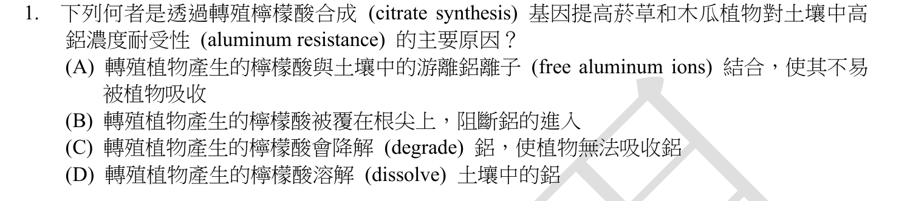
本地原卷PDF2 · 官方原答案PDF1（生物50題） · 已核對同年生物釋疑PDF2下方至3（未列本題）
官方採計：A 原答案：A
未列本輪取得的113年度生物釋疑PDF2下方至3；依同年答案，不宣稱沒有其他未取得公告
主分類：Ch37 Soil and Plant Nutrition
37.1 / Soil Conservation and Sustainable Agriculture
目錄行2443；條目起始印刷頁807；實際目錄 PDF45
次分類：Ch38 Angiosperm Reproduction and Biotechnology
38.3 / Plant Biotechnology and Genetic Engineering
目錄行2527；條目起始印刷頁837；實際目錄 PDF45
主分類理由：37.1 / Soil Conservation and Sustainable Agriculture：判別根部分泌有機酸如何減輕酸性土壤鋁毒；37.1土壤保育正文809直接討論此機制。
次分類理由：38.3 / Plant Biotechnology and Genetic Engineering：題幹以轉殖增加檸檬酸合成為介入，38.3提高作物品質與產量補充工程應用。
科學說明：採A。檸檬酸等有機陰離子在根際與Al3+形成錯合物，降低具毒性游離鋁的可用性；不是把鋁元素分解，也不是阻隔根與土壤的外衣。原題英文citrate synthesis是過程名，酵素應為citrate synthase。教材809沿用1997菸草／木瓜案例；2001獨立研究未重現增加檸檬酸及耐鋁效果，保留工程成效的研究差異，不把本題假設當所有轉殖株必然成功。
來源涵蓋範圍：教材支援分類原理，未直接涵蓋的專名與細節由同年釋疑／具名補充來源補足；實讀範圍與下載限制見來源紀錄。
教材正文：印刷808／PDF857、印刷809／PDF858、印刷837／PDF886、印刷838／PDF887
補充來源：S01
另行比較：是否應以基因工程為主，及citrate synthase轉殖效果是否一律成立。
原題判的是耐鋁原因，809根際錯合直接解題，故37.1為主、38.3工程為次。S01正反研究分開保留；沒有把鋁當可生物降解物或宣稱工程保證成功。
結論：證據確認，分類疑義已解決。完整覆核紀錄
Q02 · 30.2 / Gymnosperm Diversity 正式分類
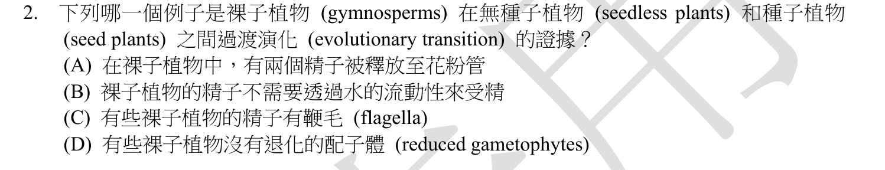
本地原卷PDF2 · 官方原答案PDF1（生物50題） · 已核對同年生物釋疑PDF2下方至3（未列本題）
官方採計：C 原答案：C
未列本輪取得的113年度生物釋疑PDF2下方至3；依同年答案，不宣稱沒有其他未取得公告
主分類：Ch30 Plant Diversity II: The Evolution of Seed Plants
30.2 / Gymnosperm Diversity
目錄行1932；條目起始印刷頁641；實際目錄 PDF43
次分類：Ch30 Plant Diversity II: The Evolution of Seed Plants
30.1 / Pollen and Production of Sperm
目錄行1916；條目起始印刷頁638；實際目錄 PDF43
主分類理由：30.2 / Gymnosperm Diversity：蘇鐵與銀杏保留具鞭毛精子，是裸子植物多樣性中的實際譜系差異。
次分類理由：30.1 / Pollen and Production of Sperm：花粉及精子形成說明外界水依賴降低，仍能保留游動精子的原因。
科學說明：採C。蘇鐵與銀杏的精子具鞭毛，許多其他種子植物以花粉管直接遞送不具鞭毛的精子。保留祖徵不表示今天的裸子植物是朝被子植物前進的線性過渡階段；題幹「過渡類型」是歷史簡化用語。
來源涵蓋範圍：以本地Campbell實際目錄及列示正文作分類依據，原題限定與同年釋疑另存；不將正文小標冒充目錄條目。
教材正文：印刷638／PDF687、印刷641／PDF690、印刷642／PDF691
補充來源：本題未另列課本外來源
另行比較：以30.1種子適應取代30.2多樣性，及過渡演化的線性用語。
C指定「有些」具鞭毛，641–642的蘇鐵／銀杏差異最直接；638的花粉作次。現生裸子植物本就是種子植物，過渡一詞只保留為題目歷史框架。
結論：證據確認，分類疑義已解決。完整覆核紀錄
Q03 · 35.3 / Primary Growth of Roots 正式分類
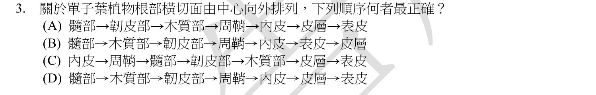
本地原卷PDF2 · 官方原答案PDF1（生物50題） · 已核對同年生物釋疑PDF2下方至3（未列本題）
官方採計：D 原答案：D
未列本輪取得的113年度生物釋疑PDF2下方至3；依同年答案，不宣稱沒有其他未取得公告
主分類：Ch35 Vascular Plant Structure, Growth, and Development
35.3 / Primary Growth of Roots
目錄行2300；條目起始印刷頁768；實際目錄 PDF44
次分類：Ch35 Vascular Plant Structure, Growth, and Development
35.1 / Dermal, Vascular, and Ground Tissues
目錄行2286；條目起始印刷頁762；實際目錄 PDF44
主分類理由：35.3 / Primary Growth of Roots：單子葉根的初生組織橫切面及內外排列直接屬35.3根初生生長，圖35.14在769。
次分類理由：35.1 / Dermal, Vascular, and Ground Tissues：35.1表皮、維管與基本組織系統用來辨認各層名稱。
科學說明：採D，即髓、木質部、韌皮部、周鞘、內皮、皮層、表皮的題設簡序。教材768–769的單子葉圖有中央薄壁細胞及周圍維管組織，並明示不同植物有變化；木質部、韌皮部常呈相間的放射組織，不應把選項理解為所有根都具七個完整同心圓層。根部周鞘在內皮內側，不能倒置。
來源涵蓋範圍：以本地Campbell實際目錄及列示正文作分類依據，原題限定與同年釋疑另存；不將正文小標冒充目錄條目。
教材正文：印刷762／PDF811、印刷768／PDF817、印刷769／PDF818
補充來源：本題未另列課本外來源
另行比較：根或莖的初生組織；木韌皮是否可說成所有根的完整同心層。
768–769及實看圖35.14確為根，內皮外有皮層、內有周鞘，D最符題設。保留維管組織實際相間與物種變化，不把簡序提升為普遍精細解剖規則。
結論：證據確認，分類疑義已解決。完整覆核紀錄
Q04 · 6.5 / The Evolutionary Origins of Mitochondria and Chloroplasts 正式分類
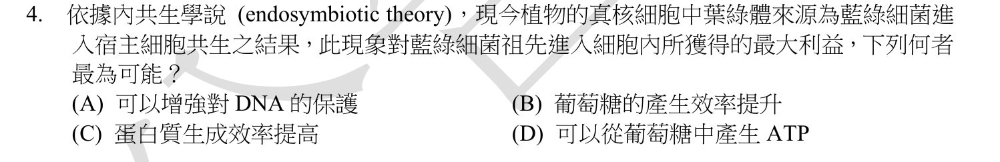
本地原卷PDF2 · 官方原答案PDF1（生物50題） · 同年釋疑PDF2
官方採計：B 原答案：B
113年度釋疑維持B
主分類：Ch06 A Tour of the Cell
6.5 / The Evolutionary Origins of Mitochondria and Chloroplasts
目錄行362；條目起始印刷頁109；實際目錄 PDF36
次分類：Ch28 Protists
28.1 / Endosymbiosis in Eukaryotic Evolution
目錄行1794；條目起始印刷頁594；實際目錄 PDF42
主分類理由：6.5 / The Evolutionary Origins of Mitochondria and Chloroplasts：問題核心是葉綠體內共生的來源與代謝利益，6.5粒線體及葉綠體的演化起源最直接。
次分類理由：28.1 / Endosymbiosis in Eukaryotic Evolution：28.1真核生物起源補充藍綠菌內共生形成光合真核譜系。
科學說明：依原答案及113釋疑採B。題幹寫「對於藍綠菌祖先而言」，釋疑卻解釋為植物宿主因取得光合能力受益，主詞確有差異。教材109及594支持宿主得到光合產物，不能據此推得被吞入的藍綠菌本身製糖效率一定增加。保留受益者與效率敘述衝突，官方B與科學限制分開；分類仍明確是內共生，不能自行另訂採計。
來源涵蓋範圍：以本地Campbell實際目錄及列示正文作分類依據，原題限定與同年釋疑另存；不將正文小標冒充目錄條目。
教材正文：印刷109／PDF158、印刷110／PDF159、印刷594／PDF643、印刷595／PDF644、印刷596／PDF645
補充來源：本題未另列課本外來源
另行比較：以藍綠菌本身或真核宿主為受益者，B是否能由題文直接推出。
重新讀原題與PDF2釋疑，主詞衝突確實存在。109／594只足以支持內共生與宿主獲光合能力，不能證明被吞者效率；不自行改採計，6.5主與28.1次均與該機制相符。
結論：證據確認，分類疑義已解決。完整覆核紀錄
Q05 · 6.6 / Components of the Cytoskeleton 正式分類
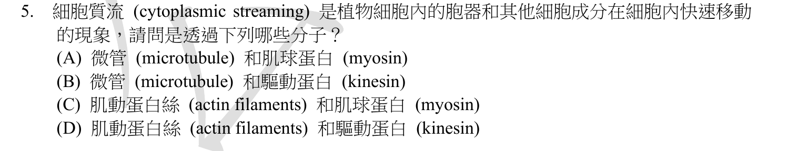
本地原卷PDF2 · 官方原答案PDF1（生物50題） · 已核對同年生物釋疑PDF2下方至3（未列本題）
官方採計：C 原答案：C
未列本輪取得的113年度生物釋疑PDF2下方至3；依同年答案，不宣稱沒有其他未取得公告
主分類：Ch06 A Tour of the Cell
6.6 / Components of the Cytoskeleton
目錄行381；條目起始印刷頁113；實際目錄 PDF36
次分類：Ch06 A Tour of the Cell
6.6 / Roles of the Cytoskeleton: Support and Motility
目錄行378；條目起始印刷頁112；實際目錄 PDF36
主分類理由：6.6 / Components of the Cytoskeleton：辨識細胞質流動的微絲與馬達蛋白屬細胞骨架成分，113表格及117正文直接相符。
次分類理由：6.6 / Roles of the Cytoskeleton: Support and Motility：骨架的支持與運動功能補充馬達蛋白沿纖維運動的共同原理。
科學說明：採C。肌動蛋白微絲與肌凝蛋白的交互作用帶動植物細胞質流動；kinesin、dynein常沿微管作用，不能代換為本題的actin–myosin組合。
來源涵蓋範圍：以本地Campbell實際目錄及列示正文作分類依據，原題限定與同年釋疑另存；不將正文小標冒充目錄條目。
教材正文：印刷112／PDF161、印刷113／PDF162、印刷116／PDF165、印刷117／PDF166
補充來源：本題未另列課本外來源
另行比較：是否為微管–kinesin細胞器運輸，而不是actin–myosin細胞質流。
113成分表及117直接述後者；C與原答案一致。成分機制為主、支持運動為次，沒有只依「植物」分類到植物章。
結論：證據確認，分類疑義已解決。完整覆核紀錄
Q06 · 28.4 / Red Algae 正式分類
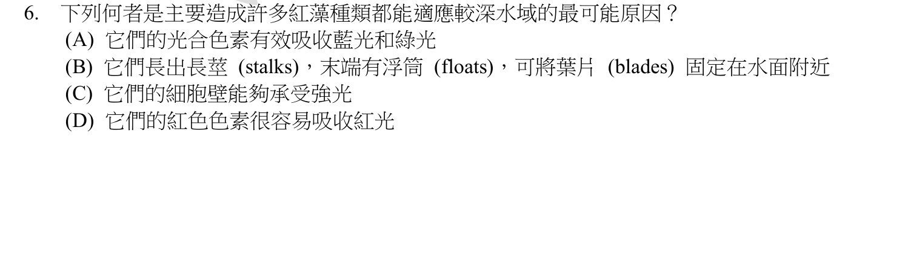
本地原卷PDF2 · 官方原答案PDF1（生物50題） · 已核對同年生物釋疑PDF2下方至3（未列本題）
官方採計：A 原答案：A
未列本輪取得的113年度生物釋疑PDF2下方至3；依同年答案，不宣稱沒有其他未取得公告
主分類：Ch28 Protists
28.4 / Red Algae
目錄行1827；條目起始印刷頁609；實際目錄 PDF42
次分類：Ch10 Photosynthesis
10.3 / Photosynthetic Pigments: The Light Receptors
目錄行647；條目起始印刷頁192；實際目錄 PDF37
主分類理由：28.4 / Red Algae：紅藻在較深水層的色素適應直接屬28.4紅藻條目609。
次分類理由：10.3 / Photosynthetic Pigments: The Light Receptors：10.3光合色素與光吸收說明輔助色素如何吸收仍可穿透水體的光。
科學說明：採A。藻紅素等輔助色素可吸收穿透較深的藍綠光並供光合作用；呈紅色是反射／透射色，不代表主要吸收紅光。不能把褐藻的固著器、柄與葉狀體一律套到紅藻。
來源涵蓋範圍：以本地Campbell實際目錄及列示正文作分類依據，原題限定與同年釋疑另存；不將正文小標冒充目錄條目。
教材正文：印刷192／PDF241、印刷193／PDF242、印刷609／PDF658、印刷610／PDF659
補充來源：本題未另列課本外來源
另行比較：是否因紅光吸收或褐藻的浮囊構造而適應深水。
609紅藻及192–193色素吸收相符A，其他題列理由不符；28.4類群為主，10.3光吸收機制為次。
結論：證據確認，分類疑義已解決。完整覆核紀錄
Q07 · 38.2 / Totipotency, Vegetative Reproduction, and Tissue Culture 正式分類
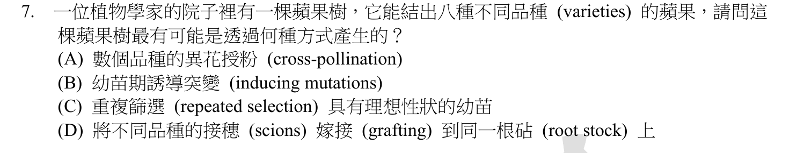
本地原卷PDF3 · 官方原答案PDF1（生物50題） · 已核對同年生物釋疑PDF2下方至3（未列本題）
官方採計：D 原答案：D
未列本輪取得的113年度生物釋疑PDF2下方至3；依同年答案，不宣稱沒有其他未取得公告
主分類：Ch38 Angiosperm Reproduction and Biotechnology
38.2 / Totipotency, Vegetative Reproduction, and Tissue Culture
目錄行2517；條目起始印刷頁835；實際目錄 PDF45
主分類理由：38.2 / Totipotency, Vegetative Reproduction, and Tissue Culture：同一砧木保留不同接穗品種屬38.2營養繁殖與全能性所涵蓋的嫁接實務；835–836直接列grafting。
次分類理由：無另列最小次條目；第二輪完整題文確認是蘋果，已將首稿誤寫葡萄改正。835–836嫁接接穗保留母體品種的機制直接支持D；最小目錄是38.2全能性／營養繁殖，不虛造Grafting目錄ID。
科學說明：採D。把八種蘋果品種的芽或枝嫁接到同一砧木，可由各接穗長出不同品種的結果枝。果實主要來自接穗的母體組織；互相授粉不會直接將同株不同枝變成八個原品種。嫁接形成組合植株，不等同把各品種全部基因融合成單一新基因型。
來源涵蓋範圍：以本地Campbell實際目錄及列示正文作分類依據，原題限定與同年釋疑另存；不將正文小標冒充目錄條目。
教材正文：印刷835／PDF884、印刷836／PDF885
補充來源：本題未另列課本外來源
另行比較：嫁接、雜交與幼苗選拔三種繁殖途徑是否混用，且題中水果是否被轉述錯誤。
第二輪完整題文確認是蘋果，已將首稿誤寫葡萄改正。835–836嫁接接穗保留母體品種的機制直接支持D；最小目錄是38.2全能性／營養繁殖，不虛造Grafting目錄ID。
結論：證據確認，分類疑義已解決。完整覆核紀錄
Q08 · 36.4 / Mechanisms of Stomatal Opening and Closing 正式分類
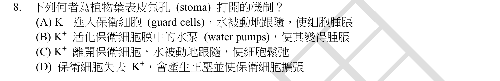
本地原卷PDF3 · 官方原答案PDF1（生物50題） · 已核對同年生物釋疑PDF2下方至3（未列本題）
官方採計：A 原答案：A
未列本輪取得的113年度生物釋疑PDF2下方至3；依同年答案，不宣稱沒有其他未取得公告
主分類：Ch36 Resource Acquisition and Transport in Vascular Plants
36.4 / Mechanisms of Stomatal Opening and Closing
目錄行2394；條目起始印刷頁797；實際目錄 PDF45
次分類：Ch36 Resource Acquisition and Transport in Vascular Plants
36.2 / Short-Distance Transport of Water Across Plasma Membranes
目錄行2365；條目起始印刷頁788；實際目錄 PDF45
主分類理由：36.4 / Mechanisms of Stomatal Opening and Closing：保衛細胞吸鉀、水進入及膨壓改變直接屬氣孔開閉機制797。
次分類理由：36.2 / Short-Distance Transport of Water Across Plasma Membranes：36.2水跨膜運輸補足溶質勢降低及滲透的因果步驟。
科學說明：採A。K+累積使保衛細胞溶質勢更負，水沿水勢差進入，膨壓配合細胞壁構造使孔隙開大。水不是由所謂水幫浦主動打入；K+也不是唯一參與的溶質。
來源涵蓋範圍：以本地Campbell實際目錄及列示正文作分類依據，原題限定與同年釋疑另存；不將正文小標冒充目錄條目。
教材正文：印刷789／PDF838、印刷790／PDF839、印刷797／PDF846、印刷798／PDF847
補充來源：本題未另列課本外來源
另行比較：以礦物吸收或主動水幫浦當主分類。
797–798保衛細胞吸鉀後被動進水，直接是開孔機制；790實讀水勢方向補次。水的被動移動與溶質的跨膜調控分開，A不是水被主動泵入。
結論：證據確認，分類疑義已解決。完整覆核紀錄
Q09 · 5.4 / Protein Structure and Function 正式分類
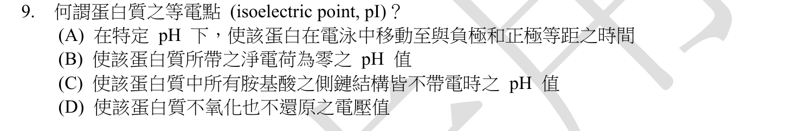
本地原卷PDF3 · 官方原答案PDF1（生物50題） · 已核對同年生物釋疑PDF2下方至3（未列本題）
官方採計：B 原答案：B
未列本輪取得的113年度生物釋疑PDF2下方至3；依同年答案，不宣稱沒有其他未取得公告
主分類：Ch05 The Structure and Function of Large Biological Molecules
5.4 / Protein Structure and Function
目錄行268；條目起始印刷頁78；實際目錄 PDF36
次分類：Ch05 The Structure and Function of Large Biological Molecules
5.4 / Amino Acids (Monomers)
目錄行262；條目起始印刷頁75；實際目錄 PDF36
主分類理由：5.4 / Protein Structure and Function：蛋白質整體電性及其pH依賴性屬5.4蛋白質結構與功能；本地82–83討論環境pH對蛋白質的影響。
次分類理由：5.4 / Amino Acids (Monomers)：胺基酸單體的可解離基團及酸鹼側鏈是蛋白質淨電荷的來源。
科學說明：採B。等電點是指定條件下蛋白質淨電荷為零時的pH，不是電泳到兩極等距所需的時間、所有側鏈都不帶電的pH或不氧化不還原的電壓。本地教材提供側鏈電性及pH原理，但未在所讀段直接定義isoelectric point；精確定義另據IUPAC。
來源涵蓋範圍：教材支援分類原理，未直接涵蓋的專名與細節由同年釋疑／具名補充來源補足；實讀範圍與下載限制見來源紀錄。
教材正文：印刷75／PDF124、印刷76／PDF125、印刷77／PDF126、印刷78／PDF127、印刷82／PDF131、印刷83／PDF132
補充來源：S02
另行比較：把pI當蛋白質所有基團中性，或只歸酸鹼pH刻度條目。
76–77可解離側鏈與82–83蛋白質pH反應支援5.4；IUPAC補精確定義。主整體蛋白電性、次胺基酸基團，移除僅泛談pH刻度的過寬次目，B的淨電荷不等於各基團零電荷。
結論：證據確認，分類疑義已解決。完整覆核紀錄
Q10 · 17.5 / Types of Small-Scale Mutations 正式分類
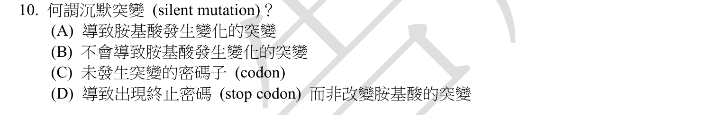
本地原卷PDF3 · 官方原答案PDF1（生物50題） · 已核對同年生物釋疑PDF2下方至3（未列本題）
官方採計：B 原答案：B
未列本輪取得的113年度生物釋疑PDF2下方至3；依同年答案，不宣稱沒有其他未取得公告
主分類：Ch17 Gene Expression: From Gene to Protein
17.5 / Types of Small-Scale Mutations
目錄行1085；條目起始印刷頁357；實際目錄 PDF39
次分類：Ch17 Gene Expression: From Gene to Protein
17.1 / The Genetic Code
目錄行1042；條目起始印刷頁340；實際目錄 PDF39
主分類理由：17.5 / Types of Small-Scale Mutations：同義替換屬17.5點突變類型，357直接定義synonymous mutation。
次分類理由：17.1 / The Genetic Code：遺傳密碼的冗餘性解釋不同密碼子可指定相同胺基酸。
科學說明：採B。密碼子改變而所指定胺基酸不變仍是DNA突變。教材357亦指出同義改變有時影響基因表現，故「沉默」不能擴大為對所有生物功能絕對無影響；非同義、終止或移碼另有不同結果。
來源涵蓋範圍：以本地Campbell實際目錄及列示正文作分類依據，原題限定與同年釋疑另存；不將正文小標冒充目錄條目。
教材正文：印刷340／PDF389、印刷341／PDF390、印刷357／PDF406、印刷358／PDF407
補充來源：本題未另列課本外來源
另行比較：把silent解成沒發生突變、完全無表型或nonsense。
357清楚區分同義與非同義並保留同義也可影響表現；B只指胺基酸未變。340–341密碼冗餘是理由，17.5主與17.1次均保留。
結論：證據確認，分類疑義已解決。完整覆核紀錄
Q11 · 11.5 / Apoptotic Pathways and the Signals That Trigger Them 正式分類
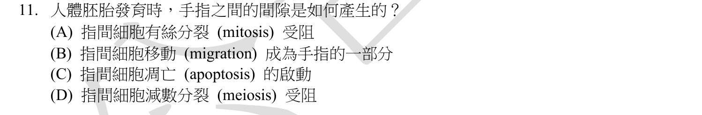
本地原卷PDF3 · 官方原答案PDF1（生物50題） · 已核對同年生物釋疑PDF2下方至3（未列本題）
官方採計：C 原答案：C
未列本輪取得的113年度生物釋疑PDF2下方至3；依同年答案，不宣稱沒有其他未取得公告
主分類：Ch11 Cell Communication
11.5 / Apoptotic Pathways and the Signals That Trigger Them
目錄行744；條目起始印刷頁230；實際目錄 PDF38
主分類理由：11.5 / Apoptotic Pathways and the Signals That Trigger Them：胚胎趾間細胞的程序性清除直接屬11.5凋亡途徑與觸發訊號，231圖示趾間細胞。
次分類理由：無另列最小次條目；231圖的趾間清除及229–230程序性死亡直接支持C，並將首稿與選項不一致的分化說法修正為有絲分裂／細胞移動。章11的凋亡最小條目足夠，未額外硬加動物發育章。
科學說明：採C。趾間組織經細胞凋亡移除，使指趾分離；此處的機制不是降低減數分裂速率，也不是單純停止有絲分裂或將趾間細胞搬到手指。教材示例為小鼠肢芽，用以支持脊椎動物指趾塑形原理，不冒稱為本題人類實驗。
來源涵蓋範圍：以本地Campbell實際目錄及列示正文作分類依據，原題限定與同年釋疑另存；不將正文小標冒充目錄條目。
教材正文：印刷229／PDF278、印刷230／PDF279、印刷231／PDF280
補充來源：本題未另列課本外來源
另行比較：凋亡、移動與停止分裂是否僅憑答案排除。
231圖的趾間清除及229–230程序性死亡直接支持C，並將首稿與選項不一致的分化說法修正為有絲分裂／細胞移動。章11的凋亡最小條目足夠，未額外硬加動物發育章。
結論：證據確認，分類疑義已解決。完整覆核紀錄
Q12 · 44.5 / Homeostatic Regulation of the Kidney 正式分類
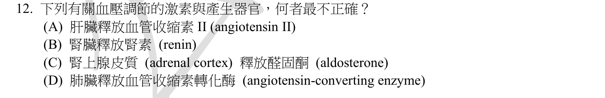
本地原卷PDF3 · 官方原答案PDF1（生物50題） · 同年釋疑PDF2
官方採計：A 原答案：A
113年度釋疑維持A
主分類：Ch44 Osmoregulation and Excretion
44.5 / Homeostatic Regulation of the Kidney
目錄行2987；條目起始印刷頁994；實際目錄 PDF47
主分類理由：44.5 / Homeostatic Regulation of the Kidney：RAAS各器官來源及血壓調節屬44.5腎臟恆定調節，995–996有路徑圖。
次分類理由：無另列最小次條目；同年釋疑維持A，996圖證肝血管收縮素原，腎素與ACE分步。釋疑簡略略去AI不照抄成一步；主題仍44.5完整腎血壓調控，不把所有內分泌腺逐一列次目。
科學說明：採A，113釋疑維持。肝臟產生血管收縮素原，腎臟近腎絲球細胞釋放腎素形成angiotensin I，再由ACE形成II；腎上腺皮質分泌醛固酮。A把肝來源直接寫成II而錯。D「肺釋放ACE」是簡寫：ACE常位於血管內皮表面，肺循環是重要轉換場所，並非只由肺分泌的游離荷爾蒙。
來源涵蓋範圍：以本地Campbell實際目錄及列示正文作分類依據，原題限定與同年釋疑另存；不將正文小標冒充目錄條目。
教材正文：印刷994／PDF1043、印刷995／PDF1044、印刷996／PDF1045
補充來源：本題未另列課本外來源
另行比較：肝來源究竟為angiotensinogen還是II；肺ACE的語意。
同年釋疑維持A，996圖證肝血管收縮素原，腎素與ACE分步。釋疑簡略略去AI不照抄成一步；主題仍44.5完整腎血壓調控，不把所有內分泌腺逐一列次目。
結論：證據確認，分類疑義已解決。完整覆核紀錄
Q13 · 12.3 / The Cell Cycle Control System 正式分類
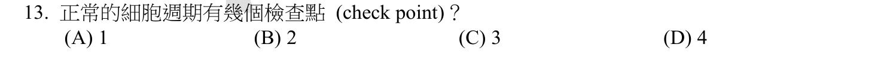
本地原卷PDF3 · 官方原答案PDF1（生物50題） · 同年釋疑PDF2
官方採計：C/D 原答案：C
113年度釋疑更正原C為C/D
主分類：Ch12 The Cell Cycle
12.3 / The Cell Cycle Control System
目錄行789；條目起始印刷頁244；實際目錄 PDF38
主分類理由：12.3 / The Cell Cycle Control System：詢問細胞週期檢查點數量，應定位12.3控制系統，保留主要檢查點與額外檢查點之別。
次分類理由：無另列最小次條目；245實看三個重要位置，247另有檢查，原C更正C/D確定。官方引用兩本不同書的版本名稱分列，沒有冒用其頁碼當本地12e；12.3控制系統分類無疑。
科學說明：原答案C；113釋疑改為C或D均採計。教材245圖12.15標G1、G2、M三個重要檢查點；247另列S期及後期／末期交界的檢查機制，所以「恰有三個」不宜當普遍總數。官方以Campbell Biology Concepts & Connections 10e與Life 12e不同計數口徑採兩選項；這兩本不是本輪本地Campbell Biology 12e，不冒稱已取得或讀完其全文。C/D表示選C或選D均可，不是要求複選。
來源涵蓋範圍：以本地Campbell實際目錄及列示正文作分類依據，原題限定與同年釋疑另存；不將正文小標冒充目錄條目。
教材正文：印刷244／PDF293、印刷245／PDF294、印刷246／PDF295、印刷247／PDF296
補充來源：本題未另列課本外來源
另行比較：三主要檢查點與四個／更多檢查機制是否相互排斥。
245實看三個重要位置，247另有檢查，原C更正C/D確定。官方引用兩本不同書的版本名稱分列，沒有冒用其頁碼當本地12e；12.3控制系統分類無疑。
結論：證據確認，分類疑義已解決。完整覆核紀錄
Q14 · 11.2 / Receptors in the Plasma Membrane 正式分類
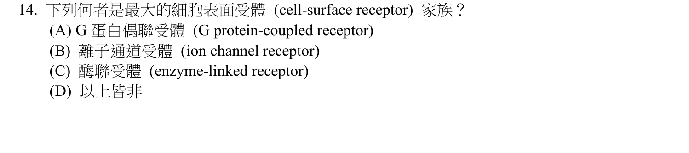
本地原卷PDF3 · 官方原答案PDF1（生物50題） · 已核對同年生物釋疑PDF2下方至3（未列本題）
官方採計：A 原答案：A
未列本輪取得的113年度生物釋疑PDF2下方至3；依同年答案，不宣稱沒有其他未取得公告
主分類：Ch11 Cell Communication
11.2 / Receptors in the Plasma Membrane
目錄行708；條目起始印刷頁217；實際目錄 PDF38
主分類理由：11.2 / Receptors in the Plasma Membrane：GPCR、RTK、離子通道型受體的比較直接屬11.2細胞膜受體217。
次分類理由：無另列最小次條目；217的最大家族以人類GPCR為例，RTK屬酶聯受體常見類型，不宣稱兩名完全同義。11.2膜受體可容納選項比較，官方A與範圍註記相容。
科學說明：採A。教材217明列GPCR為人類最大細胞表面受體家族；RTK與配體門控通道機制不同，胞內受體也非細胞表面家族。題幹省略物種，保留教材以人類為範圍的限定，不宣稱各物種數量排序一律相同。
來源涵蓋範圍：以本地Campbell實際目錄及列示正文作分類依據，原題限定與同年釋疑另存；不將正文小標冒充目錄條目。
教材正文：印刷217／PDF266、印刷218／PDF267、印刷219／PDF268
補充來源：本題未另列課本外來源
另行比較：把enzyme-linked誤限成唯一RTK或最大家族無物種範圍。
217的最大家族以人類GPCR為例，RTK屬酶聯受體常見類型，不宣稱兩名完全同義。11.2膜受體可容納選項比較，官方A與範圍註記相容。
結論：證據確認，分類疑義已解決。完整覆核紀錄
Q15 · 20.1 / Expressing Cloned Eukaryotic Genes 正式分類
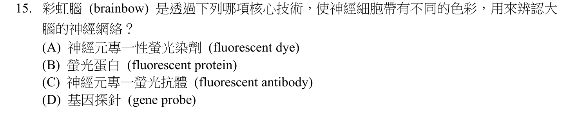
本地原卷PDF4 · 官方原答案PDF1（生物50題） · 已核對同年生物釋疑PDF2下方至3（未列本題）
官方採計：B 原答案：B
未列本輪取得的113年度生物釋疑PDF2下方至3；依同年答案，不宣稱沒有其他未取得公告
主分類：Ch20 DNA Tools and Biotechnology
20.1 / Expressing Cloned Eukaryotic Genes
目錄行1244；條目起始印刷頁422；實際目錄 PDF40
次分類：Ch06 A Tour of the Cell
6.1 / Microscopy
目錄行313；條目起始印刷頁94；實際目錄 PDF36
主分類理由：20.1 / Expressing Cloned Eukaryotic Genes：將螢光蛋白編碼基因導入並在真核細胞表現，對應20.1表現選殖真核基因422；不是用RNA雜交檢測表現的最小條目。
次分類理由：6.1 / Microscopy：6.1顯微術94–95解釋螢光訊號成像與區分細胞。
科學說明：採B。Brainbow用基因工程使神經細胞表現不同螢光蛋白組合，並非對每個細胞注射多色染料或單靠抗體染色。教材1085圖49.1直接稱四種螢光蛋白隨機組合；原始Livet研究的Cre/lox設計可有三種以上蛋白與多個拷貝。該圖位於49章開頭，並無獨立Brainbow目錄條目；分類以20.1技術與6.1成像為依據，仍保留1085直接例證。
來源涵蓋範圍：教材支援分類原理，未直接涵蓋的專名與細節由同年釋疑／具名補充來源補足；實讀範圍與下載限制見來源紀錄。
教材正文：印刷94／PDF143、印刷95／PDF144、印刷422／PDF471、印刷1085／PDF1134
補充來源：S03
另行比較：20.2 RNA表現分析、49.1神經系統與20.1外源基因表現哪個最小項最貼切。
完整原題問螢光蛋白核心技術。422外源基因表現及94–95成像適切，1085實看Brainbow圖直接證B；該圖在49.1之前，未強塞後面神經組織子目。由初始20.2分析表現改定20.1表現選殖基因，有證據理由。
結論：證據確認，分類疑義已解決。完整覆核紀錄
Q16 · 6.6 / Components of the Cytoskeleton 正式分類
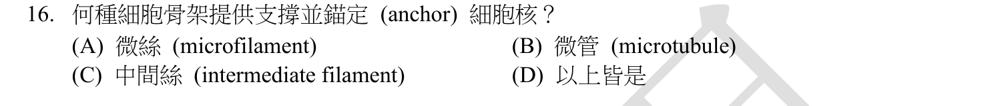
本地原卷PDF4 · 官方原答案PDF1（生物50題） · 已核對同年生物釋疑PDF2下方至3（未列本題）
官方採計：C 原答案：C
未列本輪取得的113年度生物釋疑PDF2下方至3；依同年答案，不宣稱沒有其他未取得公告
主分類：Ch06 A Tour of the Cell
6.6 / Components of the Cytoskeleton
目錄行381；條目起始印刷頁113；實際目錄 PDF36
主分類理由：6.6 / Components of the Cytoskeleton：核定位及細胞核周邊支架是中間絲的成分功能，6.6條目113與117直接描述。
次分類理由：無另列最小次條目；113表與117中間絲支架／核纖層為教材直接敘述，C是最佳選項；將「錨定」的教材典型功能與各骨架廣義力學參與分開，6.6成分足夠。
科學說明：採C。中間絲構成穩定支架，核纖層亦由相關蛋白組成，能維持細胞核等構造位置。微管與微絲同樣有力學和運輸作用，但此題教材直接對應的是中間絲，不能解讀為其他骨架永遠不參與核位置調節。
來源涵蓋範圍：以本地Campbell實際目錄及列示正文作分類依據，原題限定與同年釋疑另存；不將正文小標冒充目錄條目。
教材正文：印刷113／PDF162、印刷117／PDF166
補充來源：本題未另列課本外來源
另行比較：微絲、微管均參與機械作用，是否因此必選D。
113表與117中間絲支架／核纖層為教材直接敘述，C是最佳選項；將「錨定」的教材典型功能與各骨架廣義力學參與分開，6.6成分足夠。
結論：證據確認，分類疑義已解決。完整覆核紀錄
Q17 · 47.2 / Gastrulation 正式分類
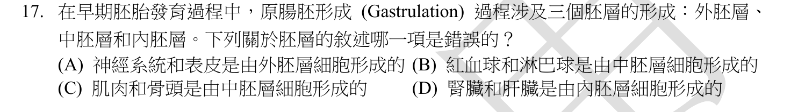
本地原卷PDF4 · 官方原答案PDF1（生物50題） · 已核對同年生物釋疑PDF2下方至3（未列本題）
官方採計：D 原答案：D
未列本輪取得的113年度生物釋疑PDF2下方至3；依同年答案，不宣稱沒有其他未取得公告
主分類：Ch47 Animal Development
47.2 / Gastrulation
目錄行3144；條目起始印刷頁1049；實際目錄 PDF48
次分類：Ch47 Animal Development
47.2 / Organogenesis
目錄行3150；條目起始印刷頁1054；實際目錄 PDF48
主分類理由：47.2 / Gastrulation：三胚層衍生器官的對應表47.9實在1051的原腸胚形成條目內，因此47.2 Gastrulation為主。
次分類理由：47.2 / Organogenesis：同概念的器官形成1054補足胚層後續如何形成器官。
科學說明：採D。腎臟主要實質來自中胚層，肝實質上皮源於內胚層，故不能把兩者都當內胚層衍生器官。1051表47.9也列外胚層的神經系統及中胚層的肌肉／骨骼。器官包含多種來源的間質、血管等，部分頭部骨骼有例外；題目是主要胚層歸屬，不能擴張成器官內每個細胞同源。
來源涵蓋範圍：以本地Campbell實際目錄及列示正文作分類依據，原題限定與同年釋疑另存；不將正文小標冒充目錄條目。
教材正文：印刷1049／PDF1098、印刷1050／PDF1099、印刷1051／PDF1100、印刷1052／PDF1101、印刷1054／PDF1103、印刷1055／PDF1104
補充來源：本題未另列課本外來源
另行比較：胚層衍生表是否真正位於Organogenesis，及整個器官所有細胞是否同源。
實看1051圖47.9位於Gastrulation，據此交換主次為原腸胚形成主、器官形成次。腎臟實質中胚、肝實質內胚，D錯；保留多來源器官與頭骨例外，未擅改題文。
結論：證據確認，分類疑義已解決。完整覆核紀錄
Q18 · 5.3 / Steroids 正式分類
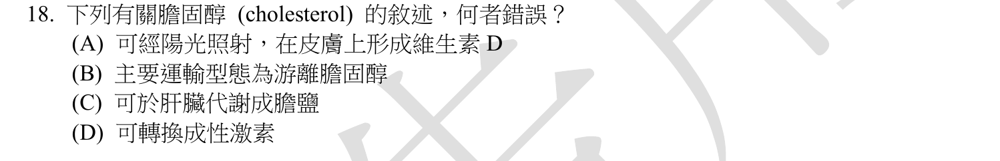
本地原卷PDF4 · 官方原答案PDF1（生物50題） · 已核對同年生物釋疑PDF2下方至3（未列本題）
官方採計：B 原答案：B
未列本輪取得的113年度生物釋疑PDF2下方至3；依同年答案，不宣稱沒有其他未取得公告
主分類：Ch05 The Structure and Function of Large Biological Molecules
5.3 / Steroids
目錄行255；條目起始印刷頁75；實際目錄 PDF36
次分類：Ch42 Circulation and Gas Exchange
42.4 / Cardiovascular Disease
目錄行2805；條目起始印刷頁937；實際目錄 PDF46
主分類理由：5.3 / Steroids：判斷膽固醇生理功能與類固醇關係，5.3 Steroids直接介紹其骨架與前驅物角色。
次分類理由：42.4 / Cardiovascular Disease：42.4血脂／脂蛋白的內容解釋血中運輸型態，判別B所稱主要型態。
科學說明：採B。血中膽固醇藉脂蛋白運送，表面有游離膽固醇，核心有膽固醇酯；游離膽固醇並非主要的運輸型態，不能將表面成分當成主要總量。膽固醇與膽汁酸及類固醇激素合成有關。A對維生素D的說法也有簡化：皮膚受UV作用的直接前驅物是7-dehydrocholesterol，形成pre-D3後再轉成D3，不是未修飾的膽固醇一步直接變D。此差異保留，官方採計仍B。
來源涵蓋範圍：教材支援分類原理，未直接涵蓋的專名與細節由同年釋疑／具名補充來源補足；實讀範圍與下載限制見來源紀錄。
教材正文：印刷75／PDF124、印刷937／PDF986、印刷938／PDF987、印刷1001／PDF1050、印刷1011／PDF1060
補充來源：S04
另行比較：B寫主要型態，不是全稱「全部」；維生素D的直接前驅物。
第二輪確認B原文是主要運輸型態，已修正首稿把它說成全稱的問題。Endotext支持膽固醇酯為主要而非游離；7-DHC與原題A簡述的差異保留。5.3主、42.4脂蛋白次解決分類。
結論：證據確認，分類疑義已解決。完整覆核紀錄
Q19 · 47.1 / Fertilization 正式分類
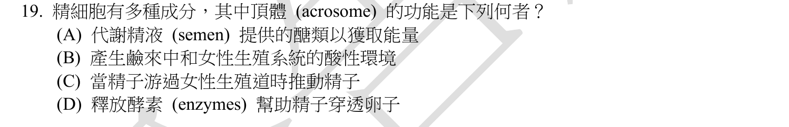
本地原卷PDF4 · 官方原答案PDF1（生物50題） · 已核對同年生物釋疑PDF2下方至3（未列本題）
官方採計：D 原答案：D
未列本輪取得的113年度生物釋疑PDF2下方至3；依同年答案，不宣稱沒有其他未取得公告
主分類：Ch47 Animal Development
47.1 / Fertilization
目錄行3134；條目起始印刷頁1044；實際目錄 PDF48
次分類：Ch46 Animal Reproduction
46.3 / Gametogenesis
目錄行3091；條目起始印刷頁1027；實際目錄 PDF48
主分類理由：47.1 / Fertilization：精子頂體反應與穿透卵外被屬47.1受精的最小條目1044。
次分類理由：46.3 / Gametogenesis：46.3配子形成1028描述成熟精子的頂體結構與來源。
科學說明：採D。頂體酵素幫助穿過卵外層，與後續膜融合配合；提供游動能量主要是粒線體，尾部鞭毛負責運動，不能代換頂體功能。題幹的精細胞依頂體構造按成熟精子理解，不把它當發生學中特指尚未成熟的spermatid。
來源涵蓋範圍：以本地Campbell實際目錄及列示正文作分類依據，原題限定與同年釋疑另存；不將正文小標冒充目錄條目。
教材正文：印刷1028／PDF1077、印刷1044／PDF1093、印刷1045／PDF1094、印刷1046／PDF1095
補充來源：本題未另列課本外來源
另行比較：頂體代謝能量、鹼液來源或精子鞭毛運動。
1028精子圖與1044–1045受精的酵素穿透直接支持D。主47.1受精、次46.3配子結構形成，保留中文精細胞未嚴格區分成熟階段的範圍。
結論：證據確認，分類疑義已解決。完整覆核紀錄
Q20 · 48.4 / Termination of Neurotransmitter Signaling 正式分類
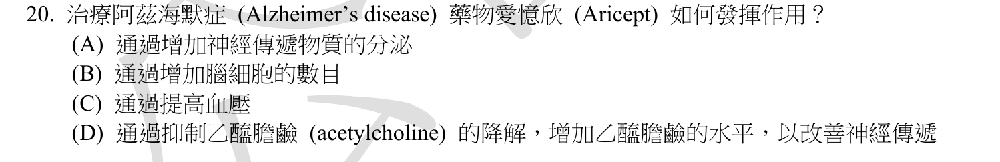
本地原卷PDF4 · 官方原答案PDF1（生物50題） · 已核對同年生物釋疑PDF2下方至3（未列本題）
官方採計：D 原答案：D
未列本輪取得的113年度生物釋疑PDF2下方至3；依同年答案，不宣稱沒有其他未取得公告
主分類：Ch48 Neurons, Synapses, and Signaling
48.4 / Termination of Neurotransmitter Signaling
目錄行3225；條目起始印刷頁1079；實際目錄 PDF48
次分類：Ch48 Neurons, Synapses, and Signaling
48.4 / Neurotransmitters
目錄行3231；條目起始印刷頁1080；實際目錄 PDF48
次分類：Ch49 Nervous Systems
49.5 / Alzheimer’s Disease
目錄行3312；條目起始印刷頁1103；實際目錄 PDF48
主分類理由：48.4 / Termination of Neurotransmitter Signaling：Aricept阻斷乙醯膽鹼分解而延長突觸訊號，最精確為48.4神經傳遞訊號終止1079。
次分類理由：48.4 / Neurotransmitters：神經傳遞物1080–1081辨認acetylcholine；49.5 / Alzheimer’s Disease：49.5阿茲海默症1103提供題目應用背景。
科學說明：採D。Donepezil（Aricept）可逆抑制acetylcholinesterase，減少乙醯膽鹼水解；不等於直接製造新神經元或治癒阿茲海默症。具名藥物機制以DailyMed仿單11及12.1補足。本地1104對當時治療的概括不當作2026全部治療現況，本題只核對此藥機制。
來源涵蓋範圍：教材支援分類原理，未直接涵蓋的專名與細節由同年釋疑／具名補充來源補足；實讀範圍與下載限制見來源紀錄。
教材正文：印刷1079／PDF1128、印刷1080／PDF1129、印刷1081／PDF1130、印刷1103／PDF1152、印刷1104／PDF1153
補充來源：S05
另行比較：把抗乙醯膽鹼降解當成直接增加釋放或增加神經元。
DailyMed 12.1可逆抑制AChE與1079訊號終止一致；D的效果來自清除減少。疾病背景保留49.5次、遞質類型48.4次，不以疾病大章掩蓋直接藥理步驟。
結論：證據確認，分類疑義已解決。完整覆核紀錄
Q21 · 35.5 / Morphogenesis and Pattern Formation 正式分類
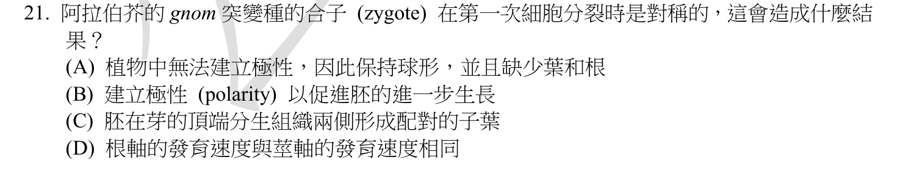
本地原卷PDF4 · 官方原答案PDF1（生物50題） · 已核對同年生物釋疑PDF2下方至3（未列本題）
官方採計：A 原答案：A
未列本輪取得的113年度生物釋疑PDF2下方至3；依同年答案，不宣稱沒有其他未取得公告
主分類：Ch35 Vascular Plant Structure, Growth, and Development
35.5 / Morphogenesis and Pattern Formation
目錄行2329；條目起始印刷頁777；實際目錄 PDF44
次分類：Ch35 Vascular Plant Structure, Growth, and Development
35.5 / Growth: Cell Division and Cell Expansion
目錄行2326；條目起始印刷頁776；實際目錄 PDF44
次分類：Ch38 Angiosperm Reproduction and Biotechnology
38.1 / Seed Development and Structure
目錄行2495；條目起始印刷頁828；實際目錄 PDF45
主分類理由：35.5 / Morphogenesis and Pattern Formation：GNOM異常造成頂基軸與形態圖式缺陷，35.5形態發生與圖式形成777是核心。
次分類理由：35.5 / Growth: Cell Division and Cell Expansion：不對稱分裂與生長776提供最初極性來源；38.1 / Seed Development and Structure：38.1胚與種子發育828–829定位胚軸及胚根、胚芽。
科學說明：採A，按嚴重gnom胚突變的題設，無法正常建立莖根的頂基極性。所讀12e正文提供一般圖式與胚發育原理，未直接命名GNOM；Vroemen等原始研究摘要補足專名。研究指出頂基極性可能缺失或反向，但徑向圖式仍可保留，不能把A的極性缺失擴張到所有軸、所有等位基因。
來源涵蓋範圍：教材支援分類原理，未直接涵蓋的專名與細節由同年釋疑／具名補充來源補足；實讀範圍與下載限制見來源紀錄。
教材正文：印刷776／PDF825、印刷777／PDF826、印刷778／PDF827、印刷828／PDF877、印刷829／PDF878
補充來源：S06
另行比較：GNOM是否為教材真實目錄小標，或所有胚軸都必完全無極性。
777–778一般圖式、828–829胚軸結合S06可定位35.5與38.1；不造GNOM目錄。摘要的頂基缺失／反向及徑向保留限制了A的字面範圍，官方A與嚴重題設分開存。
結論：證據確認，分類疑義已解決。完整覆核紀錄
Q22 · 39.2 / A Survey of Plant Hormones 正式分類
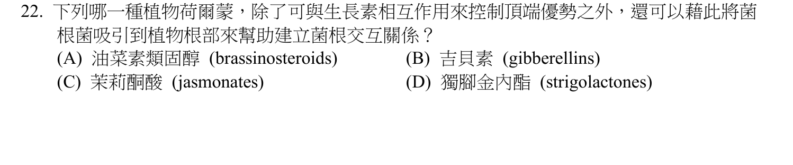
本地原卷PDF4 · 官方原答案PDF1（生物50題） · 已核對同年生物釋疑PDF2下方至3（未列本題）
官方採計：D 原答案：D
未列本輪取得的113年度生物釋疑PDF2下方至3；依同年答案，不宣稱沒有其他未取得公告
主分類：Ch39 Plant Responses to Internal and External Signals
39.2 / A Survey of Plant Hormones
目錄行2557；條目起始印刷頁847；實際目錄 PDF45
次分類：Ch37 Soil and Plant Nutrition
37.3 / Fungi and Plant Nutrition
目錄行2466；條目起始印刷頁817；實際目錄 PDF45
主分類理由：39.2 / A Survey of Plant Hormones：抑制腋芽分枝並促進菌根共生是strigolactones的激素作用，39.2激素概覽中855有專段。
次分類理由：37.3 / Fungi and Plant Nutrition：37.3植物與真菌的互利關係817–818補足根際共生端。
科學說明：採D。獨腳金內酯參與生長素相關頂端優勢，抑制側枝並促進菌根真菌與根互動；選項中的油菜素類固醇、吉貝素與茉莉酮酸均非這組特徵的最佳答案。846表39.2也列其功能；正文小標Strigolactones並非目錄獨立條目，採實際目錄Survey of Plant Hormones，不虛造ID。
來源涵蓋範圍：以本地Campbell實際目錄及列示正文作分類依據，原題限定與同年釋疑另存；不將正文小標冒充目錄條目。
教材正文：印刷817／PDF866、印刷818／PDF867、印刷846／PDF895、印刷850／PDF899、印刷855／PDF904
補充來源：本題未另列課本外來源
另行比較：只因菌根就分類到真菌章，或創造Strigolactones子目。
855激素段與817–818真菌互利共同支援D；39.2主、37.3次。實際目錄只有激素概覽作最小項，846表亦有功能，未把正文小標當目錄。
結論：證據確認，分類疑義已解決。完整覆核紀錄
Q23 · 36.4 / Stomata: Major Pathways for Water Loss 正式分類
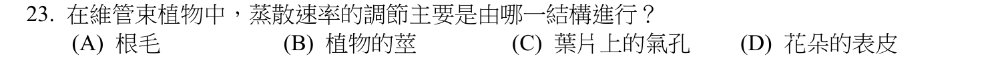
本地原卷PDF5 · 官方原答案PDF1（生物50題） · 已核對同年生物釋疑PDF2下方至3（未列本題）
官方採計：C 原答案：C
未列本輪取得的113年度生物釋疑PDF2下方至3；依同年答案，不宣稱沒有其他未取得公告
主分類：Ch36 Resource Acquisition and Transport in Vascular Plants
36.4 / Stomata: Major Pathways for Water Loss
目錄行2391；條目起始印刷頁796；實際目錄 PDF45
次分類：Ch36 Resource Acquisition and Transport in Vascular Plants
36.4 / Mechanisms of Stomatal Opening and Closing
目錄行2394；條目起始印刷頁797；實際目錄 PDF45
主分類理由：36.4 / Stomata: Major Pathways for Water Loss：大部分蒸散水分經氣孔離開，36.4水分流失主要途徑796直接回答控制構造。
次分類理由：36.4 / Mechanisms of Stomatal Opening and Closing：同概念氣孔開閉機制797解釋保衛細胞調節孔徑。
科學說明：採C。保衛細胞以膨壓控制氣孔開閉，氣孔是葉片蒸散的主要調節出口；角質層仍會有少量失水，根的吸水能力也影響整體平衡，但題目直接問蒸散控制構造。
來源涵蓋範圍：以本地Campbell實際目錄及列示正文作分類依據，原題限定與同年釋疑另存；不將正文小標冒充目錄條目。
教材正文：印刷796／PDF845、印刷797／PDF846、印刷798／PDF847
補充來源：本題未另列課本外來源
另行比較：氣孔本身與根毛吸水等整體水分平衡如何排序。
796氣孔是主要失水通道，797開閉控制，36.4兩個最小條目同章保留。C完整承接原題的蒸散速率，未用同章去重刪除次目。
結論：證據確認，分類疑義已解決。完整覆核紀錄
Q24 · 39.5 / Defenses Against Pathogens 正式分類
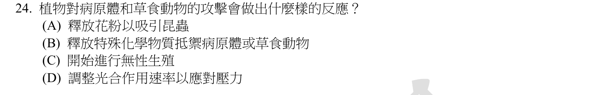
本地原卷PDF5 · 官方原答案PDF1（生物50題） · 已核對同年生物釋疑PDF2下方至3（未列本題）
官方採計：B 原答案：B
未列本輪取得的113年度生物釋疑PDF2下方至3；依同年答案，不宣稱沒有其他未取得公告
主分類：Ch39 Plant Responses to Internal and External Signals
39.5 / Defenses Against Pathogens
目錄行2596；條目起始印刷頁866；實際目錄 PDF45
次分類：Ch39 Plant Responses to Internal and External Signals
39.5 / Defenses Against Herbivores
目錄行2599；條目起始印刷頁867；實際目錄 PDF45
主分類理由：39.5 / Defenses Against Pathogens：植物以化學物質對付感染者，39.5抵抗病原體866為主要條目。
次分類理由：39.5 / Defenses Against Herbivores：同章抵抗草食動物867保留題幹另一類生物威脅。
科學說明：採B。植物可具有或誘導化學防禦，干擾病原體及草食動物。這不是動物免疫系統的抗體，也不能把所有代謝物都當同一毒素或認為各物種防禦效力相同；兩類威脅均有主次目錄依據。
來源涵蓋範圍：以本地Campbell實際目錄及列示正文作分類依據，原題限定與同年釋疑另存；不將正文小標冒充目錄條目。
教材正文：印刷866／PDF915、印刷867／PDF916、印刷868／PDF917
補充來源：本題未另列課本外來源
另行比較：病原體與草食者是否需要兩筆最小條目。
866與867各有直接防禦內容；按題文先病原為主、草食為次，兩者均理由明確。B是最直接回應，不將繁殖或光合作用壓力反應取代防禦。
結論：證據確認，分類疑義已解決。完整覆核紀錄
Q25 · 37.2 / Symptoms of Mineral Deficiency 正式分類
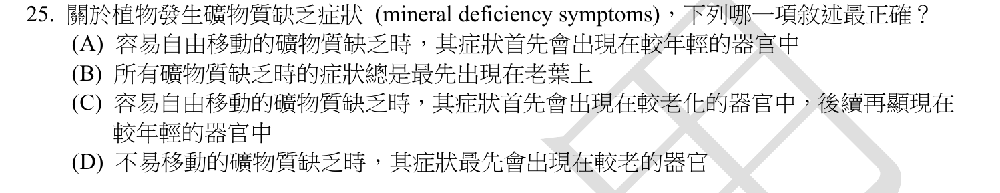
本地原卷PDF5 · 官方原答案PDF1（生物50題） · 已核對同年生物釋疑PDF2下方至3（未列本題）
官方採計：C 原答案：C
未列本輪取得的113年度生物釋疑PDF2下方至3；依同年答案，不宣稱沒有其他未取得公告
主分類：Ch37 Soil and Plant Nutrition
37.2 / Symptoms of Mineral Deficiency
目錄行2453；條目起始印刷頁810；實際目錄 PDF45
主分類理由：37.2 / Symptoms of Mineral Deficiency：礦物元素移動性與缺乏症狀出現部位，37.2缺礦物質症狀810直接涵蓋。
次分類理由：無另列最小次條目；810–812以植體內營養再分配區分新老器官先出症狀，C成立；37.2缺乏症狀最小項足以涵蓋，不增加僅泛談維管運輸的次章。
科學說明：採C。可在植物內再移動的營養元素可由老葉運往新生部位，因此缺乏時老部位往往先顯症；移動性低的元素常先影響幼嫩組織。不能把土壤中能否移動與韌皮部再運移混為同一判準。
來源涵蓋範圍：以本地Campbell實際目錄及列示正文作分類依據，原題限定與同年釋疑另存；不將正文小標冒充目錄條目。
教材正文：印刷810／PDF859、印刷811／PDF860、印刷812／PDF861
補充來源：本題未另列課本外來源
另行比較：移動性指土壤元素流動或植體內再轉運。
810–812以植體內營養再分配區分新老器官先出症狀，C成立；37.2缺乏症狀最小項足以涵蓋，不增加僅泛談維管運輸的次章。
結論：證據確認，分類疑義已解決。完整覆核紀錄
Q26 · 39.3 / Photoperiodism and Responses to Seasons 正式分類
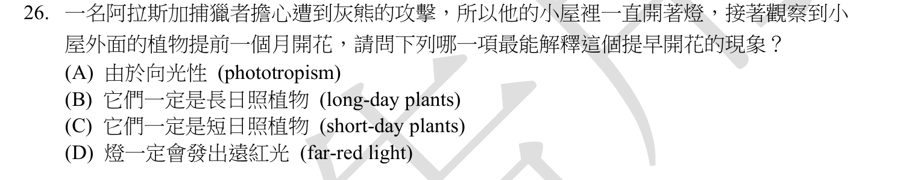
本地原卷PDF5 · 官方原答案PDF1（生物50題） · 已核對同年生物釋疑PDF2下方至3（未列本題）
官方採計：B 原答案：B
未列本輪取得的113年度生物釋疑PDF2下方至3；依同年答案，不宣稱沒有其他未取得公告
主分類：Ch39 Plant Responses to Internal and External Signals
39.3 / Photoperiodism and Responses to Seasons
目錄行2576；條目起始印刷頁859；實際目錄 PDF45
主分類理由：39.3 / Photoperiodism and Responses to Seasons：夜間照明打斷暗期而提早開花，對應39.3光週期與季節反應859。
次分類理由：無另列最小次條目；859–861連續暗期中斷促長日植物開花，B最合理；仍保留題中「一定」所省略的條件，未把未知燈光光譜自行指定。分類光週期而非彎曲生長。
科學說明：採B。在其他條件相近、燈光有效打斷暗期的題設下，結果符合長日／短夜植物；關鍵是連續暗期長度。這不是向光性，夜燈也不能未量光譜就說一定提供遠紅光。題幹「一定」省略溫度等控制條件，保留該推論範圍，不泛化到所有道路植物。
來源涵蓋範圍：以本地Campbell實際目錄及列示正文作分類依據，原題限定與同年釋疑另存；不將正文小標冒充目錄條目。
教材正文：印刷859／PDF908、印刷860／PDF909、印刷861／PDF910
補充來源：本題未另列課本外來源
另行比較：長日照推論的控制條件、遠紅光與向光性是否混淆。
859–861連續暗期中斷促長日植物開花，B最合理；仍保留題中「一定」所省略的條件，未把未知燈光光譜自行指定。分類光週期而非彎曲生長。
結論：證據確認，分類疑義已解決。完整覆核紀錄
Q27 · 12.1 / Distribution of Chromosomes During Eukaryotic Cell Division 正式分類
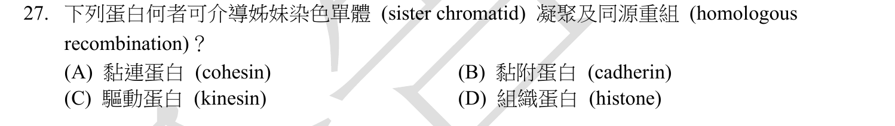
本地原卷PDF5 · 官方原答案PDF1（生物50題） · 已核對同年生物釋疑PDF2下方至3（未列本題）
官方採計：A 原答案：A
未列本輪取得的113年度生物釋疑PDF2下方至3；依同年答案，不宣稱沒有其他未取得公告
主分類：Ch12 The Cell Cycle
12.1 / Distribution of Chromosomes During Eukaryotic Cell Division
目錄行763；條目起始印刷頁236；實際目錄 PDF38
主分類理由：12.1 / Distribution of Chromosomes During Eukaryotic Cell Division：Cohesin扣住複製後姊妹染色單體，12.1細胞分裂時染色體分配236為最小對應。
次分類理由：無另列最小次條目；236–240支持黏連；S07支持姊妹模板HR而非催化股交換。刪去初稿擬列的327錯配修復次目，是移除不對題的候選分類，沒有刪題或隱藏待審；DNA修復科學關聯仍完整保存。
科學說明：採A。Cohesin促進姊妹染色單體黏合，並能藉保持模板鄰近支持同源重組修復；它本身不是執行股交換的酵素。原題「凝聚」依cohesion理解，不能混為condensin造成的染色體濃縮。DNA修復端由酵母原始研究補足，未將本地327的錯配／切除修復當成已直接描述cohesin。
來源涵蓋範圍：教材支援分類原理，未直接涵蓋的專名與細節由同年釋疑／具名補充來源補足；實讀範圍與下載限制見來源紀錄。
教材正文：印刷236／PDF285、印刷240／PDF289
補充來源：S07
另行比較：cohesin與condensin混稱，以及DNA修復次目是否有本地直接支持。
236–240支持黏連；S07支持姊妹模板HR而非催化股交換。刪去初稿擬列的327錯配修復次目，是移除不對題的候選分類，沒有刪題或隱藏待審；DNA修復科學關聯仍完整保存。
結論：證據確認，分類疑義已解決。完整覆核紀錄
Q28 · 20.2 / Determining Gene Function 正式分類
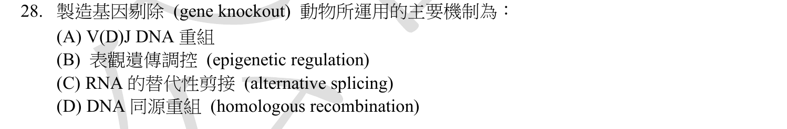
本地原卷PDF5 · 官方原答案PDF1（生物50題） · 已核對同年生物釋疑PDF2下方至3（未列本題）
官方採計：D 原答案：D
未列本輪取得的113年度生物釋疑PDF2下方至3；依同年答案，不宣稱沒有其他未取得公告
主分類：Ch20 DNA Tools and Biotechnology
20.2 / Determining Gene Function
目錄行1254；條目起始印刷頁426；實際目錄 PDF40
主分類理由：20.2 / Determining Gene Function：以基因剔除解析功能，20.2 Determining Gene Function426是直接目錄，方法範圍另行說明。
次分類理由：無另列最小次條目；426–427基因功能條目覆蓋剔除用途，S08補經典ES標的機制。D按經典脈絡採計，保留現代方法差異；不把泛稱DNA修復小節當已讀到同源重組的直接證據。
科學說明：採D，對應經典胚胎幹細胞基因標的的同源重組。Nobel 2007進階資料解釋此經典小鼠技術；本地12e的426–427著重CRISPR/Cas9失能，DNA斷裂後也可能經非同源端接合。故「基因剔除」在現代不一律等於同源重組，官方選項須按經典脈絡理解。
來源涵蓋範圍：教材支援分類原理，未直接涵蓋的專名與細節由同年釋疑／具名補充來源補足；實讀範圍與下載限制見來源紀錄。
教材正文：印刷426／PDF475、印刷427／PDF476
補充來源：S08
另行比較：DNA同源重組與CRISPR的NHEJ是否可等同。
426–427基因功能條目覆蓋剔除用途，S08補經典ES標的機制。D按經典脈絡採計，保留現代方法差異；不把泛稱DNA修復小節當已讀到同源重組的直接證據。
結論：證據確認，分類疑義已解決。完整覆核紀錄
Q29 · 20.2 / Analyzing Gene Expression 正式分類
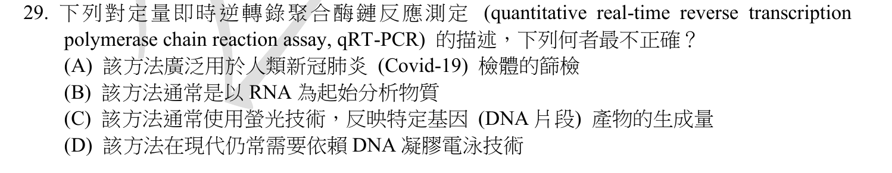
本地原卷PDF5 · 官方原答案PDF1（生物50題） · 已核對同年生物釋疑PDF2下方至3（未列本題）
官方採計：D 原答案：D
未列本輪取得的113年度生物釋疑PDF2下方至3；依同年答案，不宣稱沒有其他未取得公告
主分類：Ch20 DNA Tools and Biotechnology
20.2 / Analyzing Gene Expression
目錄行1251；條目起始印刷頁423；實際目錄 PDF40
次分類：Ch20 DNA Tools and Biotechnology
20.1 / Amplifying DNA: The Polymerase Chain Reaction (PCR) and Its Use in DNA Cloning
目錄行1241；條目起始印刷頁420；實際目錄 PDF40
主分類理由：20.2 / Analyzing Gene Expression：qRT-PCR以RNA表現量為讀出，20.2分析基因表現423及425直接述即時螢光測量。
次分類理由：20.1 / Amplifying DNA: The Polymerase Chain Reaction (PCR) and Its Use in DNA Cloning：20.1 PCR420提供cDNA模板的DNA擴增步驟。
科學說明：採D。先反轉錄RNA成cDNA，再用PCR即時監測螢光，通常不需每次跑電泳膠；電泳不是qRT-PCR必備偵測。PCR本身擴增DNA，RT才負責RNA轉換。以SARS-CoV-2 RNA作檢測標的並不表示任何一次陽性結果都已校準為絕對病毒量。
來源涵蓋範圍：以本地Campbell實際目錄及列示正文作分類依據，原題限定與同年釋疑另存；不將正文小標冒充目錄條目。
教材正文：印刷420／PDF469、印刷421／PDF470、印刷423／PDF472、印刷424／PDF473、印刷425／PDF474
補充來源：本題未另列課本外來源
另行比較：即時RT-PCR、終點PCR、必要電泳與RNA模板的先後順序。
425直接說即時螢光無需凝膠，420–421提供PCR步驟，D錯而非B RNA起始錯。20.2表現分析主與20.1擴增次保留，量化需校準的界線亦留存。
結論：證據確認，分類疑義已解決。完整覆核紀錄
Q30 · 16.2 / DNA Replication: A Closer Look 正式分類
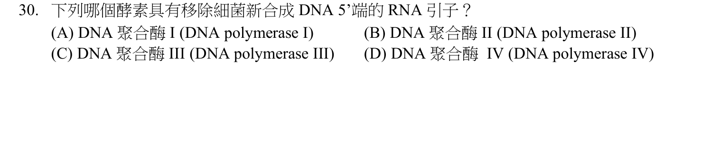
本地原卷PDF5 · 官方原答案PDF1（生物50題） · 已核對同年生物釋疑PDF2下方至3（未列本題）
官方採計：A 原答案：A
未列本輪取得的113年度生物釋疑PDF2下方至3；依同年答案，不宣稱沒有其他未取得公告
主分類：Ch16 The Molecular Basis of Inheritance
16.2 / DNA Replication: A Closer Look
目錄行1010；條目起始印刷頁322；實際目錄 PDF39
主分類理由：16.2 / DNA Replication: A Closer Look：大腸桿菌複製時各蛋白功能，16.2複製DNA股與327表16.1直接列DNA polymerase I。
次分類理由：無另列最小次條目；327表16.1確認I去除並替換引子，主要延長為III，A正確；說明另舉helicase／primase只是機制比較，不將它們假冒原選項。16.2複製機制最小項一致。
科學說明：採A。DNA polymerase I以5′→3′外切活性移除RNA引子並以DNA補上缺口；與DNA polymerase III主要延長、helicase解旋、primase製引子區別。所有DNA聚合的延長仍為5′→3′；此為教材大腸桿菌模型，不泛稱所有細菌都用完全相同蛋白配置。
來源涵蓋範圍：以本地Campbell實際目錄及列示正文作分類依據，原題限定與同年釋疑另存；不將正文小標冒充目錄條目。
教材正文：印刷324／PDF373、印刷325／PDF374、印刷326／PDF375、印刷327／PDF376
補充來源：本題未另列課本外來源
另行比較：聚合酶I、II、III、IV以及外切方向。
327表16.1確認I去除並替換引子，主要延長為III，A正確；說明另舉helicase／primase只是機制比較，不將它們假冒原選項。16.2複製機制最小項一致。
結論：證據確認，分類疑義已解決。完整覆核紀錄
Q31 · 42.2 / The Mammalian Heart: A Closer Look 正式分類
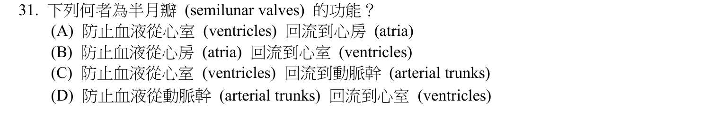
本地原卷PDF6 · 官方原答案PDF1（生物50題） · 已核對同年生物釋疑PDF2下方至3（未列本題）
官方採計：D 原答案：D
未列本輪取得的113年度生物釋疑PDF2下方至3；依同年答案，不宣稱沒有其他未取得公告
主分類：Ch42 Circulation and Gas Exchange
42.2 / The Mammalian Heart: A Closer Look
目錄行2773；條目起始印刷頁926；實際目錄 PDF46
主分類理由：42.2 / The Mammalian Heart: A Closer Look：半月瓣的逆流阻止方向屬42.2哺乳動物心臟926。
次分類理由：無另列最小次條目；926–927心室舒張時動脈壓高會關半月瓣，D方向正確；主42.2心臟，沒有因動脈字樣移到血管條目。
科學說明：採D。心室舒張時主動脈與肺動脈半月瓣防止動脈血倒流回心室；房室瓣才阻止心室向心房逆流，方向不能互換。瓣膜隨壓差被動開關，不是主動抽送血液的幫浦。
來源涵蓋範圍：以本地Campbell實際目錄及列示正文作分類依據，原題限定與同年釋疑另存；不將正文小標冒充目錄條目。
教材正文：印刷926／PDF975、印刷927／PDF976、印刷928／PDF977
補充來源：本題未另列課本外來源
另行比較：半月瓣與房室瓣阻止逆流方向是否反轉。
926–927心室舒張時動脈壓高會關半月瓣，D方向正確；主42.2心臟，沒有因動脈字樣移到血管條目。
結論：證據確認，分類疑義已解決。完整覆核紀錄
Q32 · 49.5 / Depression 正式分類
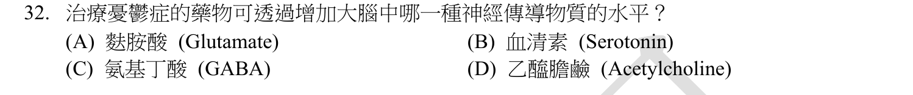
本地原卷PDF6 · 官方原答案PDF1（生物50題） · 已核對同年生物釋疑PDF2下方至3（未列本題）
官方採計：B 原答案：B
未列本輪取得的113年度生物釋疑PDF2下方至3；依同年答案，不宣稱沒有其他未取得公告
主分類：Ch49 Nervous Systems
49.5 / Depression
目錄行3306；條目起始印刷頁1102；實際目錄 PDF48
次分類：Ch48 Neurons, Synapses, and Signaling
48.4 / Neurotransmitters
目錄行3231；條目起始印刷頁1080；實際目錄 PDF48
次分類：Ch48 Neurons, Synapses, and Signaling
48.4 / Termination of Neurotransmitter Signaling
目錄行3225；條目起始印刷頁1079；實際目錄 PDF48
主分類理由：49.5 / Depression：常見抗憂鬱藥SSRI的作用是49.5憂鬱症1102的直接內容。
次分類理由：48.4 / Neurotransmitters：48.4神經傳遞物辨識serotonin；48.4 / Termination of Neurotransmitter Signaling：訊號終止1079補足再攝取被抑制後的效果。
科學說明：採B。教材例子中SSRI抑制serotonin再攝取，延長突觸間隙訊號。抗憂鬱藥並非全只作用serotonin；這個機制也不證明憂鬱症只有單一低血清素病因。此處是原考題機制核對，不是用藥選擇建議。
來源涵蓋範圍：以本地Campbell實際目錄及列示正文作分類依據，原題限定與同年釋疑另存；不將正文小標冒充目錄條目。
教材正文：印刷1079／PDF1128、印刷1080／PDF1129、印刷1081／PDF1130、印刷1102／PDF1151、印刷1103／PDF1152
補充來源：本題未另列課本外來源
另行比較：單一遞質例子是否被寫成所有抗憂鬱藥或單因病因。
1102明列SSRI與serotonin，B是題設典型例子；1079清除與1080遞質兩個同章次目保留。原題只說「可透過」，未寫「所有」，已相應限定解說。
結論：證據確認，分類疑義已解決。完整覆核紀錄
Q33 · 50.3 / The Vertebrate Visual System 正式分類
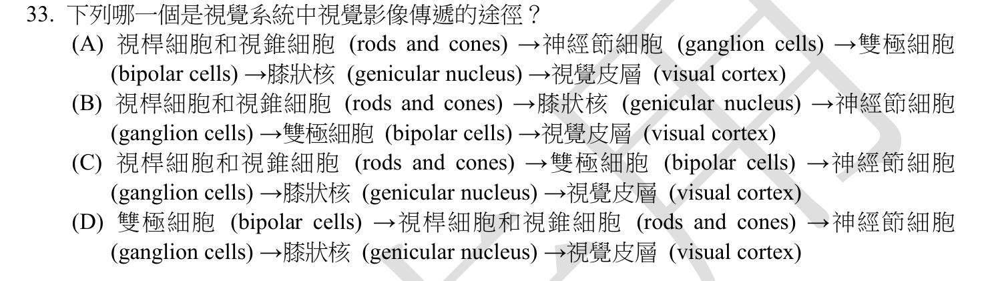
本地原卷PDF6 · 官方原答案PDF1（生物50題） · 已核對同年生物釋疑PDF2下方至3（未列本題）
官方採計：C 原答案：C
未列本輪取得的113年度生物釋疑PDF2下方至3；依同年答案，不宣稱沒有其他未取得公告
主分類：Ch50 Sensory and Motor Mechanisms
50.3 / The Vertebrate Visual System
目錄行3364；條目起始印刷頁1119；實際目錄 PDF49
主分類理由：50.3 / The Vertebrate Visual System：視網膜訊息到中樞的順序屬50.3脊椎動物視覺系統1119。
次分類理由：無另列最小次條目；1120三細胞鏈與S11丘腦中繼一致C；原題genicular nucleus只寫膝狀核，科學說明補為外側，原字不改。50.3視覺最小項足夠。
科學說明：採C。主要路徑為視桿／視錐細胞、雙極細胞、神經節細胞、外側膝狀核及視覺皮質；與光線穿入視網膜的方向不同。局部水平與無軸突細胞可調節路徑，並非題列五節點的替代順序。局部三細胞鏈據1120，外側膝狀核的具名中繼由Purves作者教材補足。
來源涵蓋範圍：教材支援分類原理，未直接涵蓋的專名與細節由同年釋疑／具名補充來源補足；實讀範圍與下載限制見來源紀錄。
教材正文：印刷1119／PDF1168、印刷1120／PDF1169、印刷1121／PDF1170、印刷1122／PDF1171
補充來源：S11
另行比較：光線方向與神經傳遞方向、膝狀核名稱是否足夠精確。
1120三細胞鏈與S11丘腦中繼一致C；原題genicular nucleus只寫膝狀核，科學說明補為外側，原字不改。50.3視覺最小項足夠。
結論：證據確認，分類疑義已解決。完整覆核紀錄
Q34 · 50.5 / Other Types of Muscle 正式分類
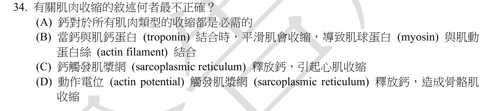
本地原卷PDF6 · 官方原答案PDF1（生物50題） · 已核對同年生物釋疑PDF2下方至3（未列本題）
官方採計：B 原答案：B
未列本輪取得的113年度生物釋疑PDF2下方至3；依同年答案，不宣稱沒有其他未取得公告
主分類：Ch50 Sensory and Motor Mechanisms
50.5 / Other Types of Muscle
目錄行3384；條目起始印刷頁1131；實際目錄 PDF49
次分類：Ch50 Sensory and Motor Mechanisms
50.5 / Vertebrate Skeletal Muscle
目錄行3381；條目起始印刷頁1126；實際目錄 PDF49
主分類理由：50.5 / Other Types of Muscle：比較平滑肌與心肌之Ca2+調節，50.5其他類型肌肉1131–1132最直接。
次分類理由：50.5 / Vertebrate Skeletal Muscle：同概念骨骼肌1127–1128提供troponin與Ca2+的對照。
科學說明：採B。平滑肌沒有troponin複合體，Ca2+結合calmodulin再活化激酶，使myosin頭磷酸化；骨骼肌與心肌則以troponin調控薄肌絲。1132直接證實calmodulin，不能因1131摘文尚未續完而漏讀。D英文actin potential保留為原題誤植，按action potential討論其興奮收縮連結。
來源涵蓋範圍：以本地Campbell實際目錄及列示正文作分類依據，原題限定與同年釋疑另存；不將正文小標冒充目錄條目。
教材正文：印刷1127／PDF1176、印刷1128／PDF1177、印刷1131／PDF1180、印刷1132／PDF1181
補充來源：本題未另列課本外來源
另行比較：平滑肌troponin或calmodulin，是否漏看跨頁續文。
1132全文與實圖確認平滑肌無troponin而用calmodulin，B最不正確。1131心肌與1128骨骼肌作比較，D的actin potential誤植照存，50.5主次同章不刪。
結論：證據確認，分類疑義已解決。完整覆核紀錄
Q35 · 48.4 / Summation of Postsynaptic Potentials 正式分類
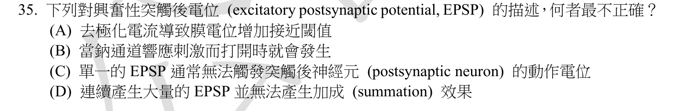
本地原卷PDF6 · 官方原答案PDF1（生物50題） · 已核對同年生物釋疑PDF2下方至3（未列本題）
官方採計：D 原答案：D
未列本輪取得的113年度生物釋疑PDF2下方至3；依同年答案，不宣稱沒有其他未取得公告
主分類：Ch48 Neurons, Synapses, and Signaling
48.4 / Summation of Postsynaptic Potentials
目錄行3222；條目起始印刷頁1079；實際目錄 PDF48
次分類：Ch48 Neurons, Synapses, and Signaling
48.4 / Generation of Postsynaptic Potentials
目錄行3219；條目起始印刷頁1078；實際目錄 PDF48
主分類理由：48.4 / Summation of Postsynaptic Potentials：多個突觸後電位的時間與空間加成，48.4加總1079直接對應。
次分類理由：48.4 / Generation of Postsynaptic Potentials：突觸後電位產生1078解釋興奮性輸入如何造成漸變去極化。
科學說明：採D。多個EPSP經時間或空間加成可使軸丘達閾值，單一EPSP通常未必足夠；EPSP是漸變電位，不是每次都觸發全有全無動作電位。興奮性通道的離子通透性可能涉及多種陽離子，不能把所有EPSP都硬寫成純Na+通道。
來源涵蓋範圍：以本地Campbell實際目錄及列示正文作分類依據，原題限定與同年釋疑另存；不將正文小標冒充目錄條目。
教材正文：印刷1078／PDF1127、印刷1079／PDF1128、印刷1080／PDF1129
補充來源：本題未另列課本外來源
另行比較：D否定連續EPSP加成，是反向選題還是正確敘述。
重新讀原題的「最不正確」及1079，D正因否定加成而被選；不是把D原句說成科學正確。1078與1079主次按加成核心定序。
結論：證據確認，分類疑義已解決。完整覆核紀錄
Q36 · 41.5 / Regulation of Appetite and Consumption 正式分類
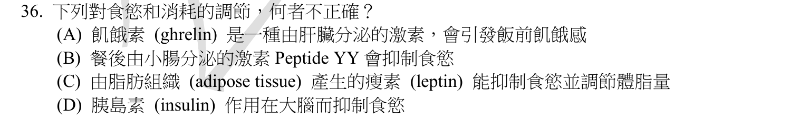
本地原卷PDF6 · 官方原答案PDF1（生物50題） · 同年釋疑PDF2、同年釋疑PDF3
官方採計：A 原答案：A
113年度釋疑維持A
主分類：Ch41 Animal Nutrition
41.5 / Regulation of Appetite and Consumption
目錄行2746；條目起始印刷頁917；實際目錄 PDF46
主分類理由：41.5 / Regulation of Appetite and Consumption：ghrelin、PYY、leptin與insulin對食慾的調節在41.5食慾調節917。
次分類理由：無另列最小次條目；PDF2 Q36續到PDF3已合看；917胃源ghrelin支持A錯。原D大腦按官方brain保留，沒有套用同份公告英文16或其他年度食慾題。
科學說明：採A，113釋疑維持。Ghrelin主要來自胃並促進食慾，不是肝；餐後腸道PYY與脂肪leptin、胰島素可傳遞飽足／能量狀態訊息。題文「大腦」依釋疑指brain而非狹義cerebrum，不能把教材中的下視丘調節當成否定B–D的理由。
來源涵蓋範圍：以本地Campbell實際目錄及列示正文作分類依據，原題限定與同年釋疑另存；不將正文小標冒充目錄條目。
教材正文：印刷917／PDF966、印刷918／PDF967
補充來源：本題未另列課本外來源
另行比較：ghrelin器官來源及brain與cerebrum的釋疑跨頁。
PDF2 Q36續到PDF3已合看；917胃源ghrelin支持A錯。原D大腦按官方brain保留，沒有套用同份公告英文16或其他年度食慾題。
結論：證據確認，分類疑義已解決。完整覆核紀錄
Q37 · 9.5 / Types of Fermentation 正式分類
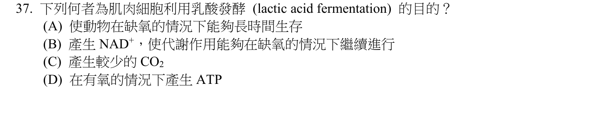
本地原卷PDF6 · 官方原答案PDF1（生物50題） · 已核對同年生物釋疑PDF2下方至3（未列本題）
官方採計：B 原答案：B
未列本輪取得的113年度生物釋疑PDF2下方至3；依同年答案，不宣稱沒有其他未取得公告
主分類：Ch09 Cellular Respiration and Fermentation
9.5 / Types of Fermentation
目錄行595；條目起始印刷頁180；實際目錄 PDF37
次分類：Ch09 Cellular Respiration and Fermentation
9.5 / Comparing Fermentation with Anaerobic and Aerobic Respiration
目錄行598；條目起始印刷頁181；實際目錄 PDF37
主分類理由：9.5 / Types of Fermentation：肌肉乳酸發酵的功能直接屬9.5發酵類型180。
次分類理由：9.5 / Comparing Fermentation with Anaerobic and Aerobic Respiration：同概念發酵與呼吸比較181說明NAD+再生及糖解ATP來源。
科學說明：採B。丙酮酸還原成乳酸會將NADH氧化成NAD+，讓糖解持續產生ATP；乳酸生成那一步本身不額外產ATP。題設肌肉運動常用缺氧脈絡解釋，但教材181提醒乳酸亦可在有氧條件形成，不把乳酸等同必然缺氧。
來源涵蓋範圍：以本地Campbell實際目錄及列示正文作分類依據，原題限定與同年釋疑另存；不將正文小標冒充目錄條目。
教材正文：印刷179／PDF228、印刷180／PDF229、印刷181／PDF230
補充來源：本題未另列課本外來源
另行比較：乳酸生成是否直接產ATP，或NAD+再生等同只在缺氧才發生。
180–181直接說NAD+恢復糖解所需氧化態，B為題設功能。181有氧也可能乳酸形成的提醒保存；兩個同章最小項分別涵蓋反應與能量比較。
結論：證據確認，分類疑義已解決。完整覆核紀錄
Q38 · 46.5 / Conception, Embryonic Development, and Birth 正式分類
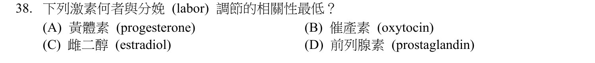
本地原卷PDF7 · 官方原答案PDF1（生物50題） · 同年釋疑PDF3
官方採計：A 原答案：A
113年度釋疑維持A
主分類：Ch46 Animal Reproduction
46.5 / Conception, Embryonic Development, and Birth
目錄行3114；條目起始印刷頁1034；實際目錄 PDF48
主分類理由：46.5 / Conception, Embryonic Development, and Birth：四種分娩相關荷爾蒙比較，在46.5受孕、胚發育與出生的1036分娩圖直接呈現。
次分類理由：無另列最小次條目；1036圖46.18與官方PDF3的三個促進因子一致，A採計不變；S09功能性撤退保留黃體素角色。分類46.5出生而非只憑激素名歸內分泌概論。
科學說明：採A，113釋疑維持。教材圖46.18中estradiol、oxytocin及prostaglandins直接促進分娩正回饋，因此四者比較以progesterone最不直接。黃體素維持妊娠，功能性黃體素撤退仍參與人類產程；不能把「相關性最低」改成「與分娩無關」。Mesiano等人類子宮肌研究摘要支持受體比例相關的功能性撤退，不等於宣稱所有產婦血中黃體素必下降。
來源涵蓋範圍：教材支援分類原理，未直接涵蓋的專名與細節由同年釋疑／具名補充來源補足；實讀範圍與下載限制見來源紀錄。
教材正文：印刷1035／PDF1084、印刷1036／PDF1085、印刷1037／PDF1086
補充來源：S09
另行比較：把相關性最低誤寫為progesterone與產程完全無關。
1036圖46.18與官方PDF3的三個促進因子一致，A採計不變；S09功能性撤退保留黃體素角色。分類46.5出生而非只憑激素名歸內分泌概論。
結論：證據確認，分類疑義已解決。完整覆核紀錄
Q39 · 11.3 / Small Molecules and Ions as Second Messengers 正式分類
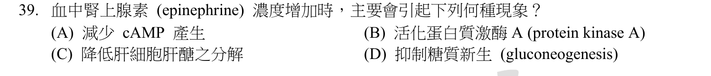
本地原卷PDF7 · 官方原答案PDF1（生物50題） · 已核對同年生物釋疑PDF2下方至3（未列本題）
官方採計：B 原答案：B
未列本輪取得的113年度生物釋疑PDF2下方至3；依同年答案，不宣稱沒有其他未取得公告
主分類：Ch11 Cell Communication
11.3 / Small Molecules and Ions as Second Messengers
本地文字目錄漏 and Ions；以實際PDF目錄全名為準，原toc.txt不改。 目錄行724；條目起始印刷頁223；實際目錄 PDF38
次分類：Ch45 Hormones and the Endocrine System
45.1 / Cellular Hormone Response Pathways
目錄行3004；條目起始印刷頁1002；實際目錄 PDF47
次分類：Ch45 Hormones and the Endocrine System
45.3 / Adrenal Hormones: Response to Stress
目錄行3039；條目起始印刷頁1012；實際目錄 PDF47
主分類理由：11.3 / Small Molecules and Ions as Second Messengers：cAMP是第二傳訊者並活化PKA，11.3 Small Molecules and Ions as Second Messengers223最精確。
次分類理由：45.1 / Cellular Hormone Response Pathways：45.1細胞荷爾蒙反應1002–1003直接以腎上腺素示例；45.3 / Adrenal Hormones: Response to Stress：45.3腎上腺壓力反應1012保留其激素來源背景。
科學說明：採B。典型β腎上腺素受體經Gs與adenylyl cyclase使ATP轉為cAMP，再活化PKA；cAMP不是直接磷酸化蛋白的激酶。不同受體／組織可有其他路徑，不泛稱腎上腺素只能用cAMP。本地1002正文寫成由AMP轉cAMP，與223及1003圖45.6的ATP相衝突；採ATP作科學說明並保留教材異文。目錄文字漏and Ions，年度條目以實際PDF目錄全名為準。
來源涵蓋範圍：以本地Campbell實際目錄及列示正文作分類依據，原題限定與同年釋疑另存；不將正文小標冒充目錄條目。
教材正文：印刷223／PDF272、印刷224／PDF273、印刷1002／PDF1051、印刷1003／PDF1052、印刷1012／PDF1061、印刷1013／PDF1062
補充來源：本題未另列課本外來源
另行比較：正文AMP、圖ATP及第二傳訊者／激酶角色。
實看1003圖45.6及223，底物是ATP而cAMP活化PKA，B。1002正文AMP異文和L0724文字目錄漏詞都如實記錄，最小目錄採PDF全名且保留兩個45章次目。
結論：證據確認，分類疑義已解決。完整覆核紀錄
Q40 · 41.4 / Mutualistic Adaptations 正式分類
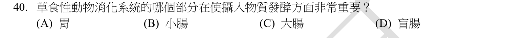
本地原卷PDF7 · 官方原答案PDF1（生物50題） · 同年釋疑PDF3
官方採計：A/D 原答案：D
113年度釋疑更正原D為A/D
主分類：Ch41 Animal Nutrition
41.4 / Mutualistic Adaptations
目錄行2733；條目起始印刷頁912；實際目錄 PDF46
次分類：Ch41 Animal Nutrition
41.4 / Stomach and Intestinal Adaptations
目錄行2730；條目起始印刷頁912；實際目錄 PDF46
主分類理由：41.4 / Mutualistic Adaptations：消化道共生微生物分解纖維素直接屬41.4互利適應912。
次分類理由：41.4 / Stomach and Intestinal Adaptations：同章胃腸構造的專門化912–914用來區分前腸與後腸發酵部位。
科學說明：原答案D；113釋疑改為A或D均採計。反芻動物的胃室與無尾熊等的盲腸均可容納纖維素分解共生菌；不同草食動物部位不同。教材914亦提兔類large intestine的共生發酵，因此廣義「草食性動物」題文不能把C大腸一概斷言完全無此功能，官方採計範圍仍僅A/D。釋疑寫「chapter41.16/page912/Fig46.18」有混植：912是Fig41.16，914為Fig41.20，Fig46.18在1036是分娩；原始釋疑不改寫。
來源涵蓋範圍：以本地Campbell實際目錄及列示正文作分類依據，原題限定與同年釋疑另存；不將正文小標冒充目錄條目。
教材正文：印刷912／PDF961、印刷913／PDF962、印刷914／PDF963
補充來源：本題未另列課本外來源
另行比較：胃、盲腸、大腸在不同草食者的發酵角色與官方引用圖號。
原題只寫草食性動物，不是指定無尾熊或牛；PDF3正式更正A/D。912與914的實讀保留大腸例，官方圖號混植另記；沒有把C自行加入採計，也未抹去科學廣義範圍。
結論：證據確認，分類疑義已解決。完整覆核紀錄
Q41 · 17.4 / Molecular Components of Translation 正式分類
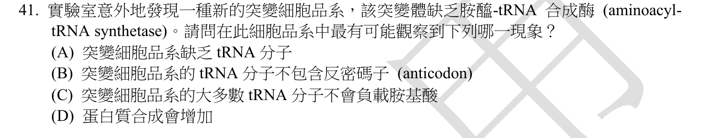
本地原卷PDF7 · 官方原答案PDF1（生物50題） · 已核對同年生物釋疑PDF2下方至3（未列本題）
官方採計：C 原答案：C
未列本輪取得的113年度生物釋疑PDF2下方至3；依同年答案，不宣稱沒有其他未取得公告
主分類：Ch17 Gene Expression: From Gene to Protein
17.4 / Molecular Components of Translation
目錄行1069；條目起始印刷頁348；實際目錄 PDF39
主分類理由：17.4 / Molecular Components of Translation：aminoacyl-tRNA synthetase為tRNA裝載胺基酸，17.4轉譯分子組件348–350直接說明。
次分類理由：無另列最小次條目；348–350充填步驟支持C；原題沒有英文a synthetase，已刪除首稿虛引的英文單數措辭，改記原題未指定酵素種類的實際限制。17.4轉譯組件定位無疑。
科學說明：採C。若胺醯-tRNA合成酶系統失活，正常tRNA無法有效充填胺基酸，轉譯受阻；它不是將tRNA密碼子變為反密碼子的酵素。題幹沒有指明失去哪一種胺基酸專屬合成酶；若只是單一專屬酵素失能，影響應限相應tRNA族群。C的大多數tRNA是依一般裝載系統缺失的題設理解，並保留未細分酵素的範圍限制。
來源涵蓋範圍：以本地Campbell實際目錄及列示正文作分類依據，原題限定與同年釋疑另存；不將正文小標冒充目錄條目。
教材正文：印刷348／PDF397、印刷349／PDF398、印刷350／PDF399
補充來源：本題未另列課本外來源
另行比較：tRNA是否因無合成酶便不存在或沒有反密碼子，與缺乏酵素的量詞。
348–350充填步驟支持C；原題沒有英文a synthetase，已刪除首稿虛引的英文單數措辭，改記原題未指定酵素種類的實際限制。17.4轉譯組件定位無疑。
結論：證據確認，分類疑義已解決。完整覆核紀錄
Q42 · 17.3 / Split Genes and RNA Splicing 正式分類
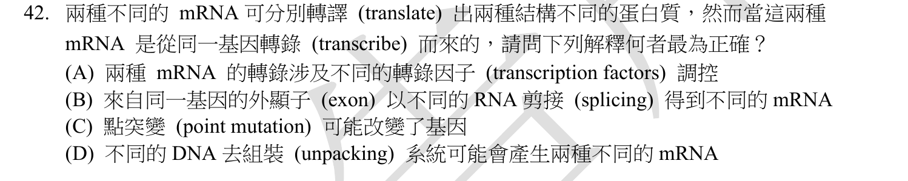
本地原卷PDF7 · 官方原答案PDF1（生物50題） · 已核對同年生物釋疑PDF2下方至3（未列本題）
官方採計：B 原答案：B
未列本輪取得的113年度生物釋疑PDF2下方至3；依同年答案，不宣稱沒有其他未取得公告
主分類：Ch17 Gene Expression: From Gene to Protein
17.3 / Split Genes and RNA Splicing
目錄行1062；條目起始印刷頁345；實際目錄 PDF39
次分類：Ch18 Regulation of Gene Expression
18.2 / Mechanisms of Post-transcriptional Regulation
目錄行1129；條目起始印刷頁377；實際目錄 PDF39
主分類理由：17.3 / Split Genes and RNA Splicing：同一前驅RNA不同剪接組合形成不同蛋白，17.3 RNA剪接345是直接過程。
次分類理由：18.2 / Mechanisms of Post-transcriptional Regulation：18.2轉錄後調控377–378保留細胞如何調節選擇性剪接的表現層面。
科學說明：採B。選擇性剪接可使同一基因產生多種mRNA與蛋白質異構物；不是把同一個外顯子改成另一條DNA序列。外顯子可能含非轉譯區，不能把所有保留外顯子都等同完整蛋白編碼序列。
來源涵蓋範圍：以本地Campbell實際目錄及列示正文作分類依據，原題限定與同年釋疑另存；不將正文小標冒充目錄條目。
教材正文：印刷345／PDF394、印刷346／PDF395、印刷347／PDF396、印刷377／PDF426、印刷378／PDF427
補充來源：本題未另列課本外來源
另行比較：不同轉錄因子、點突變與選擇性剪接的相對合理性。
題設同一基因的兩種mRNA，345與377的選擇性剪接直接支持B；沒有否認其他機制在別的情境可能改變轉錄，只選本題最精確。17.3過程主、18.2調控次。
結論：證據確認，分類疑義已解決。完整覆核紀錄
Q43 · 27.2 / Genetic Recombination 正式分類
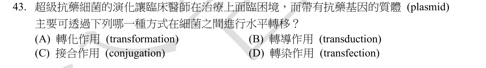
本地原卷PDF7 · 官方原答案PDF1（生物50題） · 已核對同年生物釋疑PDF2下方至3（未列本題）
官方採計：C 原答案：C
未列本輪取得的113年度生物釋疑PDF2下方至3；依同年答案，不宣稱沒有其他未取得公告
主分類：Ch27 Bacteria and Archaea
27.2 / Genetic Recombination
目錄行1728；條目起始印刷頁579；實際目錄 PDF42
次分類：Ch27 Bacteria and Archaea
27.6 / Antibiotic Resistance
目錄行1777；條目起始印刷頁588；實際目錄 PDF42
主分類理由：27.2 / Genetic Recombination：R plasmid經接合在細菌間移動，27.2遺傳重組579–581為傳遞機制。
次分類理由：27.6 / Antibiotic Resistance：27.6抗生素抗藥性588提供臨床問題脈絡。
科學說明：採C。許多R質體含抗藥性與接合傳遞相關基因，可在接合時轉入受體細菌；581直接列此過程。不是細菌減數分裂或只靠垂直遺傳，亦不宣稱所有R質體都可自行接合；其他水平基因轉移機制也可能散播抗藥性。
來源涵蓋範圍：以本地Campbell實際目錄及列示正文作分類依據，原題限定與同年釋疑另存；不將正文小標冒充目錄條目。
教材正文：印刷579／PDF628、印刷580／PDF629、印刷581／PDF630、印刷588／PDF637、印刷589／PDF638
補充來源：本題未另列課本外來源
另行比較：轉化或轉導也能水平轉移，是否因此接合無法判定。
581 R plasmids段直接指許多R質體可接合散播，C是所問主要路徑；另兩種機制不被說成永遠不可能。27.2機制主、27.6抗藥背景次。
結論：證據確認，分類疑義已解決。完整覆核紀錄
Q44 · 18.2 / Regulation of Transcription Initiation 正式分類
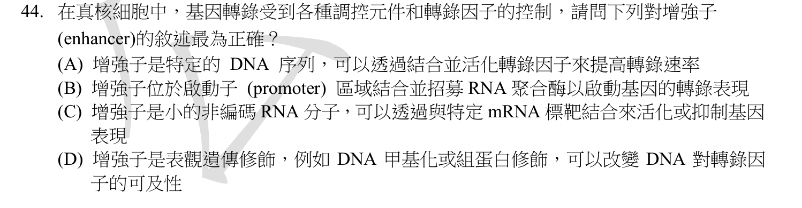
本地原卷PDF7 · 官方原答案PDF1（生物50題） · 已核對同年生物釋疑PDF2下方至3（未列本題）
官方採計：A 原答案：A
未列本輪取得的113年度生物釋疑PDF2下方至3；依同年答案，不宣稱沒有其他未取得公告
主分類：Ch18 Regulation of Gene Expression
18.2 / Regulation of Transcription Initiation
目錄行1126；條目起始印刷頁373；實際目錄 PDF39
主分類理由：18.2 / Regulation of Transcription Initiation：enhancer與activator協作調節轉錄起始，18.2轉錄起始調控373–376最小對應。
次分類理由：無另列最小次條目；373–376圖的enhancer結合activator與轉錄裝置符合A；增強子不必位於啟動子，選項B過限。DNA與轉錄因子活化的題文簡寫限制已存，18.2起始調控為主。
科學說明：採A。增強子是cis調控DNA，與活化蛋白結合後促進轉錄機器運作，可位於遠端或內含子。題文「活化轉錄因子」按調控交互作用理解，不是DNA本身具有酵素活性，也不等同直接修飾蛋白、剪接或啟動DNA複製。
來源涵蓋範圍：以本地Campbell實際目錄及列示正文作分類依據，原題限定與同年釋疑另存；不將正文小標冒充目錄條目。
教材正文：印刷373／PDF422、印刷374／PDF423、印刷375／PDF424、印刷376／PDF425
補充來源：本題未另列課本外來源
另行比較：enhancer是否等同promoter、ncRNA或染色質修飾。
373–376圖的enhancer結合activator與轉錄裝置符合A；增強子不必位於啟動子，選項B過限。DNA與轉錄因子活化的題文簡寫限制已存，18.2起始調控為主。
結論：證據確認，分類疑義已解決。完整覆核紀錄
Q45 · 18.3 / Effects on mRNAs by MicroRNAs and Small Interfering RNAs 正式分類
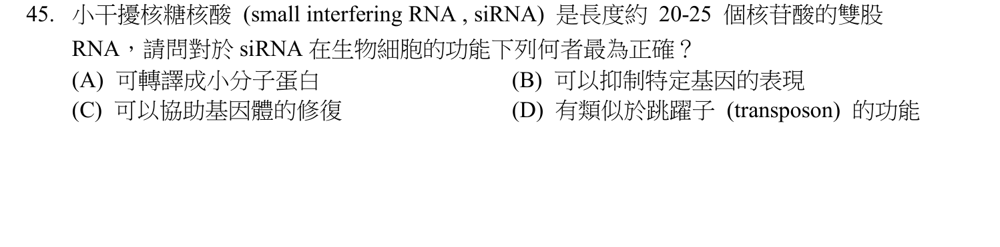
本地原卷PDF7 · 官方原答案PDF1（生物50題） · 已核對同年生物釋疑PDF2下方至3（未列本題）
官方採計：B 原答案：B
未列本輪取得的113年度生物釋疑PDF2下方至3；依同年答案，不宣稱沒有其他未取得公告
主分類：Ch18 Regulation of Gene Expression
18.3 / Effects on mRNAs by MicroRNAs and Small Interfering RNAs
目錄行1136；條目起始印刷頁379；實際目錄 PDF39
主分類理由：18.3 / Effects on mRNAs by MicroRNAs and Small Interfering RNAs：siRNA及RNAi的序列專一性沉默屬18.3非編碼RNA作用379。
次分類理由：無另列最小次條目；379–380所述RNAi直接支持B，不能把抑制特定基因誤成必然修復基因體。20–25 nt為題目範圍，未據此編造另一目錄；18.3非編碼RNA最小項足夠。
科學說明：採B。小干擾RNA的導引股與沉默複合體辨識互補RNA，促使降解或抑制其表現；它不是轉譯成酵素的mRNA，也不是負責搬運胺基酸的tRNA或自行移動的轉位子。生成時可為短雙股，但成熟導引作用不能一律說兩股同時運作。
來源涵蓋範圍：以本地Campbell實際目錄及列示正文作分類依據，原題限定與同年釋疑另存；不將正文小標冒充目錄條目。
教材正文：印刷379／PDF428、印刷380／PDF429
補充來源：本題未另列課本外來源
另行比較：siRNA雙股前體與作用中導引股、DNA修復選項。
379–380所述RNAi直接支持B，不能把抑制特定基因誤成必然修復基因體。20–25 nt為題目範圍，未據此編造另一目錄；18.3非編碼RNA最小項足夠。
結論：證據確認，分類疑義已解決。完整覆核紀錄
Q46 · 43.1 / Innate Immunity of Vertebrates 正式分類
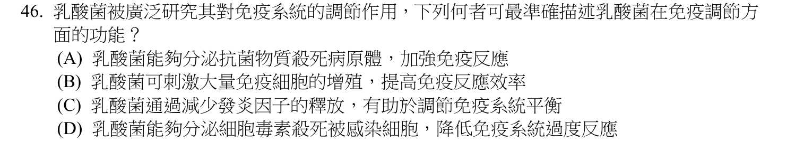
本地原卷PDF8 · 官方原答案PDF1（生物50題） · 同年釋疑PDF3
官方採計：C 原答案：C
113年度釋疑維持C
主分類：Ch43 The Immune System
43.1 / Innate Immunity of Vertebrates
目錄行2870；條目起始印刷頁954；實際目錄 PDF47
次分類：Ch27 Bacteria and Archaea
27.6 / Mutualistic Bacteria
目錄行1771；條目起始印刷頁587；實際目錄 PDF42
主分類理由：43.1 / Innate Immunity of Vertebrates：抑制促發炎細胞激素是43.1脊椎動物先天免疫954–957中的發炎調節問題。
次分類理由：27.6 / Mutualistic Bacteria：27.6互利細菌587保留乳酸菌與宿主互動背景，補充研究的L. reuteri只是具名示例，非原題指定菌種。
科學說明：採C，113釋疑維持。特定L. reuteri菌株在研究系統可抑制TNF等促發炎訊號，B把大量免疫細胞增殖當成普遍效益、D把細胞毒素殺宿主感染細胞當成通則都不恰當。原始2008／2012研究有菌株與細胞條件限制；抑制過度發炎可與其他免疫效益並存，不能把釋疑對A的排除擴張成所有益生菌絕不強化任何免疫功能。
來源涵蓋範圍：教材支援分類原理，未直接涵蓋的專名與細節由同年釋疑／具名補充來源補足；實讀範圍與下載限制見來源紀錄。
教材正文：印刷587／PDF636、印刷588／PDF637、印刷955／PDF1004、印刷956／PDF1005、印刷957／PDF1006
補充來源：S10
另行比較：乳酸菌未指定菌種，能否用單一L. reuteri研究概括，及「加強免疫」是否絕對不能。
重新讀原題／釋疑都是泛稱乳酸菌，已將L. reuteri明確降為具名研究示例。43.1發炎調節是判別核心、27.6互利為次；C官方採計與菌株差異分開，沒有虛構原題含抗體選項。
結論：證據確認，分類疑義已解決。完整覆核紀錄
Q47 · 54.2 / Species with a Large Impact 正式分類
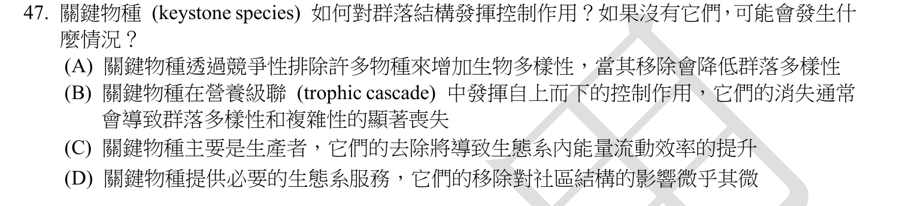
本地原卷PDF8 · 官方原答案PDF1（生物50題） · 已核對同年生物釋疑PDF2下方至3（未列本題）
官方採計：B 原答案：B
未列本輪取得的113年度生物釋疑PDF2下方至3；依同年答案，不宣稱沒有其他未取得公告
主分類：Ch54 Community Ecology
54.2 / Species with a Large Impact
目錄行3620；條目起始印刷頁1225；實際目錄 PDF50
次分類：Ch54 Community Ecology
54.2 / Bottom-Up and Top-Down Controls
目錄行3623；條目起始印刷頁1226；實際目錄 PDF50
主分類理由：54.2 / Species with a Large Impact：關鍵種移除造成不成比例的群落變化，54.2對群落影響較大的物種1225為核心。
次分類理由：54.2 / Bottom-Up and Top-Down Controls：同章由上而下與由下而上控制1226解釋移除掠食者的營養級連鎖。
科學說明：採B。像海星等關鍵掠食者能抑制優勢競爭種，被移除後群落物種組成可能劇變；關鍵種是影響不成比例，不是單指數量最多。結果依食物網脈絡而定，不保證移除任何掠食者都造成完全相同方向的多樣性變化。
來源涵蓋範圍：以本地Campbell實際目錄及列示正文作分類依據，原題限定與同年釋疑另存；不將正文小標冒充目錄條目。
教材正文：印刷1225／PDF1274、印刷1226／PDF1275、印刷1227／PDF1276
補充來源：本題未另列課本外來源
另行比較：所有關鍵種是否都是掠食者，失去後一定同方向。
1225定義為不成比例影響，1226自上而下說明題設典型掠食關鍵種，B最佳。保留廣義關鍵種不全是掠食者及食物網方向限制，不套用單一絕對定律。
結論：證據確認，分類疑義已解決。完整覆核紀錄
Q48 · 33.1 / Sponges are basal animals that lack tissues 正式分類
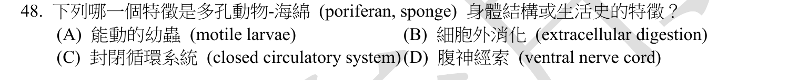
本地原卷PDF8 · 官方原答案PDF1（生物50題） · 已核對同年生物釋疑PDF2下方至3（未列本題）
官方採計：A 原答案：A
未列本輪取得的113年度生物釋疑PDF2下方至3；依同年答案，不宣稱沒有其他未取得公告
主分類：Ch33 An Introduction to Invertebrates
33.1 / Sponges are basal animals that lack tissues
目錄行2093；條目起始印刷頁690；實際目錄 PDF44
主分類理由：33.1 / Sponges are basal animals that lack tissues：海綿的幼體運動、成體攝食與缺乏真組織皆在33.1，實際目錄此概念無更小子目。
次分類理由：無另列最小次條目；690–691確認可游動幼體與胞內消化，A；33.1在真實目錄下無子項，因此概念層正是最小項，沒有創設Motile larvae子目。
科學說明：採A。海綿通常有可游動的幼體與固著成體，領細胞捕捉食物並進行細胞內消化，無閉鎖循環系統或腹側神經索。不能以成體固著就推論一生完全無運動階段。
來源涵蓋範圍：以本地Campbell實際目錄及列示正文作分類依據，原題限定與同年釋疑另存；不將正文小標冒充目錄條目。
教材正文：印刷690／PDF739、印刷691／PDF740
補充來源：本題未另列課本外來源
另行比較：成體固著能否否定幼體運動；是否有更小海綿目錄項。
690–691確認可游動幼體與胞內消化，A；33.1在真實目錄下無子項，因此概念層正是最小項，沒有創設Motile larvae子目。
結論：證據確認，分類疑義已解決。完整覆核紀錄
Q49 · 24.4 / The Time Course of Speciation 正式分類
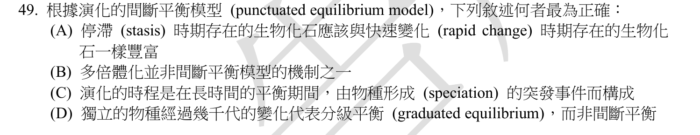
本地原卷PDF8 · 官方原答案PDF1（生物50題） · 已核對同年生物釋疑PDF2下方至3（未列本題）
官方採計：C 原答案：C
未列本輪取得的113年度生物釋疑PDF2下方至3；依同年答案，不宣稱沒有其他未取得公告
主分類：Ch24 The Origin of Species
24.4 / The Time Course of Speciation
目錄行1524；條目起始印刷頁520；實際目錄 PDF41
主分類理由：24.4 / The Time Course of Speciation：化石顯示長期穩定與相對短期物種分歧，24.4物種形成的時間過程520直接對應斷續平衡。
次分類理由：無另列最小次條目；520–522長停滯及較短物種形成符合C；幾千代在地質尺度仍可快速。D的graduated equilibrium保留原字，不當作教材的獨立標準模式或新目錄名稱。
科學說明：採C。斷續平衡指地質記錄中相對長的形態穩定期與較短的改變／分歧期，不是單個世代瞬間形成新種，也不等於期間所有基因完全不變；漸變與斷續模式都可能出現。
來源涵蓋範圍：以本地Campbell實際目錄及列示正文作分類依據，原題限定與同年釋疑另存；不將正文小標冒充目錄條目。
教材正文：印刷520／PDF569、印刷521／PDF570、印刷522／PDF571
補充來源：本題未另列課本外來源
另行比較：地質尺度的快速與幾千代變化是否衝突，graduated是否標準術語。
520–522長停滯及較短物種形成符合C；幾千代在地質尺度仍可快速。D的graduated equilibrium保留原字，不當作教材的獨立標準模式或新目錄名稱。
結論：證據確認，分類疑義已解決。完整覆核紀錄
Q50 · 24.1 / The Biological Species Concept 正式分類
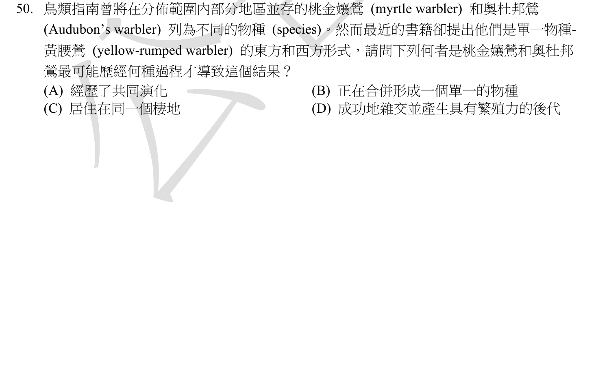
本地原卷PDF8 · 官方原答案PDF1（生物50題） · 已核對同年生物釋疑PDF2下方至3（未列本題）
官方採計：D 原答案：D
未列本輪取得的113年度生物釋疑PDF2下方至3；依同年答案，不宣稱沒有其他未取得公告
主分類：Ch24 The Origin of Species
24.1 / The Biological Species Concept
目錄行1488；條目起始印刷頁507；實際目錄 PDF41
次分類：Ch24 The Origin of Species
24.3 / Hybrid Zones over Time
目錄行1517；條目起始印刷頁518；實際目錄 PDF41
主分類理由：24.1 / The Biological Species Concept：可交配並產生可育後代的例子檢驗24.1生物學物種概念507，D提供題設重新歸為一種的繁殖證據。
次分類理由：24.3 / Hybrid Zones over Time：24.3雜交帶518–519說明可育雜交與融合、穩定或強化等不同後果。
科學說明：採D。成功雜交且後代可育，是故事中支持重新歸為同種的繁殖證據；僅觀察可育雜交不能單獨證明兩族群必定正在融合，故B推論過強。題文鳥類分類指南的「最近」保留為113題目歷史敘述，不宣稱是2026現行分類共識；穩定雜交帶與部分生殖隔離仍可能存在。
來源涵蓋範圍：以本地Campbell實際目錄及列示正文作分類依據，原題限定與同年釋疑另存；不將正文小標冒充目錄條目。
教材正文：印刷507／PDF556、印刷508／PDF557、印刷509／PDF558、印刷518／PDF567、印刷519／PDF568
補充來源：本題未另列課本外來源
另行比較：D是可育雜交過程，還是選項直接寫生物學物種概念；B合併是否已被證明。
完整原題D實寫成功雜交且後代可育，已修正首稿將選項名稱概念化的轉述。507以繁殖界定與518–519雜交結果相符；沒有根據題文「最近」宣稱當前鳥類分類，TCU113答案D保留。
結論：證據確認，分類疑義已解決。完整覆核紀錄
目前篩選沒有符合的題目；本年度總數仍為50題。
補充來源
查證日期：2026-09-10。使用原始研究摘要、官方資料與作者教材，不宣稱所有出版商全文已取得。詳細界線見來源紀錄。
- S01 de la Fuente 1997及Delhaize 2001：檸檬酸轉殖耐鋁的研究差異
1997提出轉殖菸草／木瓜耐鋁改善；2001獨立研究報告未見相應檸檬酸累積／外排增加。根際有機酸錯合原理與特定工程成效應分開。
實讀範圍：本輪web搜尋讀到兩篇原始研究的索引摘要／題名與2001部分結果段；PMC與PubMed直接開啟遇驗證頁，不宣稱全文下載或完整全文審查。DOI分別10.1126/science.276.5318.1566與10.1104/pp.125.4.2059。
原始來源1 · 原始來源2 - S02 IUPAC Gold Book：isoelectric point
指定條件下淨電荷為零時的pH；不等於每一離子基團都中性。
實讀範圍：本輪讀術語條目定義及記號，無特定蛋白質pI數值計算。
原始來源1 - S03 Livet等2007 Brainbow原始研究
Cre/lox系統可使多種螢光蛋白隨機表現並組合顏色，用於區分神經細胞與追蹤突起。
實讀範圍：本輪讀出版商研究摘要，非全部實驗方法或圖版；DOI10.1038/nature06293。本地1085圖49.1另有直接圖說。
原始來源1 - S04 Endotext：脂蛋白與維生素D生成
脂蛋白表面游離膽固醇、核心膽固醇酯；皮膚7-dehydrocholesterol受UV生成前維生素D3，再經熱異構化。
實讀範圍：本輪web讀作者教材lipoprotein structure及cutaneous production相關段落，非整本Endotext或臨床處方建議。
原始來源1 · 原始來源2 - S05 DailyMed ARICEPT官方仿單11及12.1
Donepezil可逆抑制acetylcholinesterase，減少乙醯膽鹼水解並增強膽鹼訊號。
實讀範圍：本輪直接開頁讀11 Description及12.1 Mechanism of Action；只核對藥理，不作劑量或個人治療建議。
原始來源1 - S06 Vroemen等1996 GNOM胚胎圖式原始研究
gnom胚可能頂基極性缺失或反向，但徑向圖式仍保留；支持A的嚴重頂基缺陷而限制其過度概括。
實讀範圍：本輪PubMed搜尋讀原始研究摘要，不宣稱讀完全文；DOI10.1105/tpc.8.5.783，The Plant Cell 8:783起。
原始來源1 - S07 Cohesin與複製後DNA修復原始研究
姊妹染色體靠近支持同源重組模板使用，cohesin並非本身催化股交換；修復過程仍需動態調節。
實讀範圍：本輪讀2012及2010 PubMed原始研究摘要；研究系統為酵母，不當成人類所有損傷修復的完整模型。2012 DOI10.1038/nature11630。
原始來源1 · 原始來源2 - S08 Nobel Prize 2007 Medicine Advanced Information：經典基因標的
胚胎幹細胞結合同源重組實現小鼠基因標的／剔除；現代CRISPR失能不必一律用此修復途徑。
實讀範圍：本輪讀官方進階說明中homologous recombination與embryonic stem cells段落；與本地426的CRISPR內容比較。
原始來源1 - S09 Mesiano等2002：人類分娩的功能性黃體素撤退
人類子宮肌黃體素受體比例與產程相關，支持黃體素功能仍參與分娩；不能將相對低直接刺激誤寫成毫無關聯。
實讀範圍：本輪讀原始研究摘要；12例產程與12例非產程子宮肌比較，非全體人群或因果干預試驗。DOI10.1210/jcem.87.6.8609。
原始來源1 - S10 Lactobacillus reuteri抗發炎原始研究2008／2012
特定菌株抑制TNF等促發炎訊號；2012研究將菌源histamine與PKA／ERK路徑相連。效應不能不分菌株與情境概括。
實讀範圍：本輪讀PubMed兩篇原始研究摘要；2008含特定菌株與單核球／巨噬細胞，2012分子機制；未進行臨床療效審查。
原始來源1 · 原始來源2 - S11 Purves等Neuroscience：視網膜及中央視覺路徑
主要訊息鏈由感光細胞經雙極、神經節細胞，至丘腦外側膝狀核再到初級視覺皮質。
實讀範圍：本輪讀作者教材Retina的三細胞鏈及Central Visual Pathways概覽；不是完整視覺迴路所有分支。
原始來源1 · 原始來源2